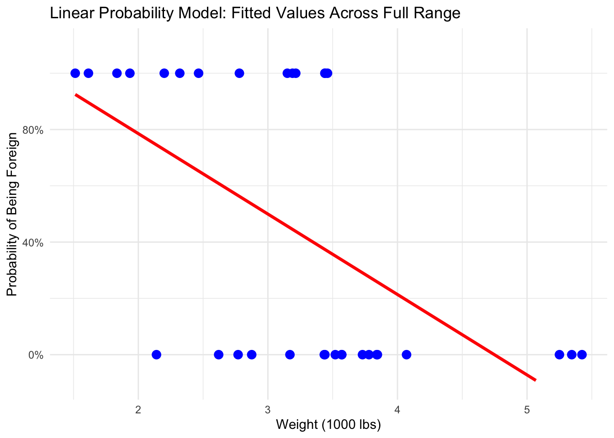
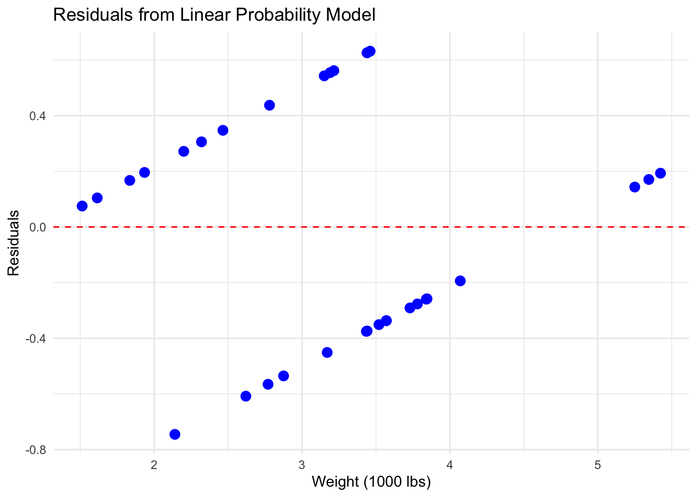
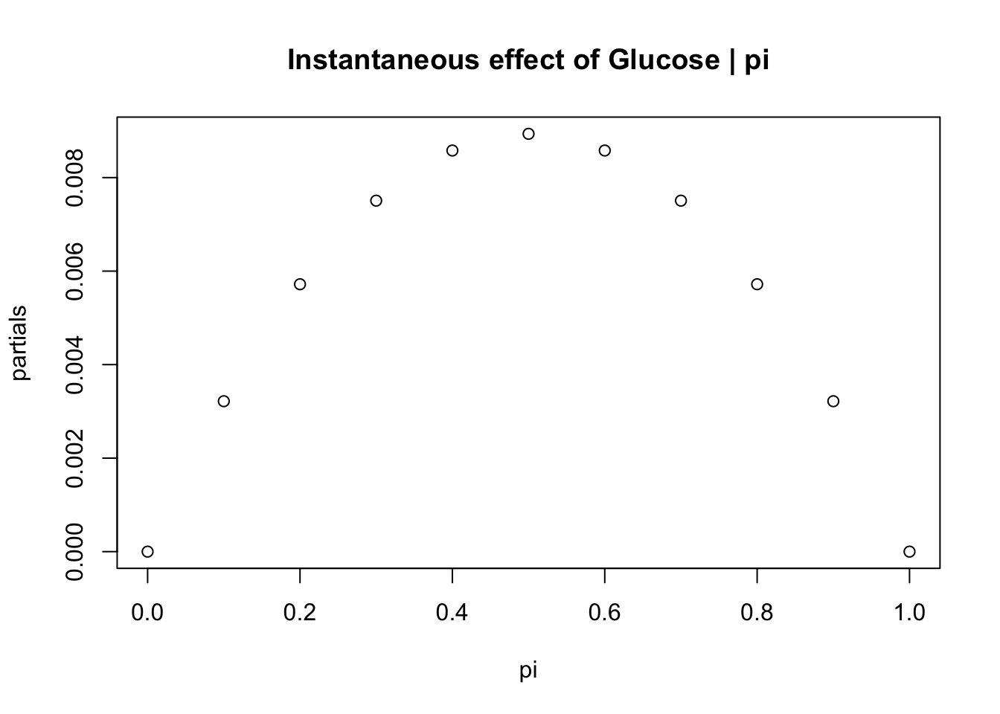
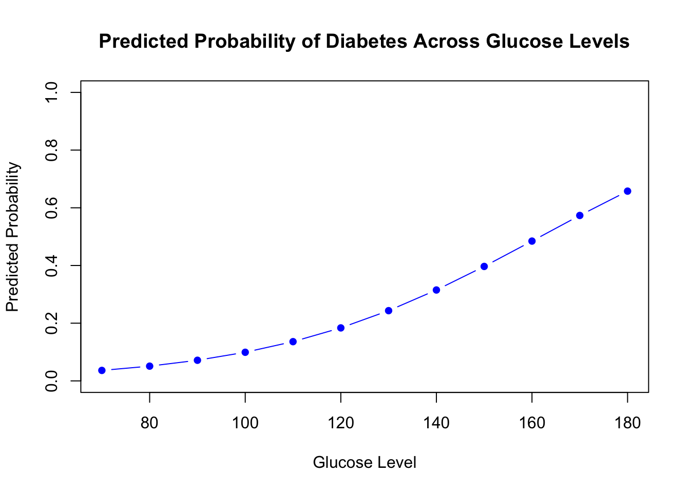
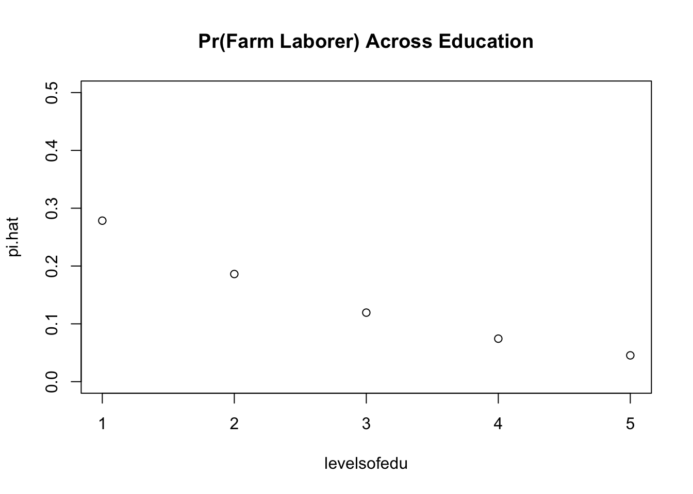
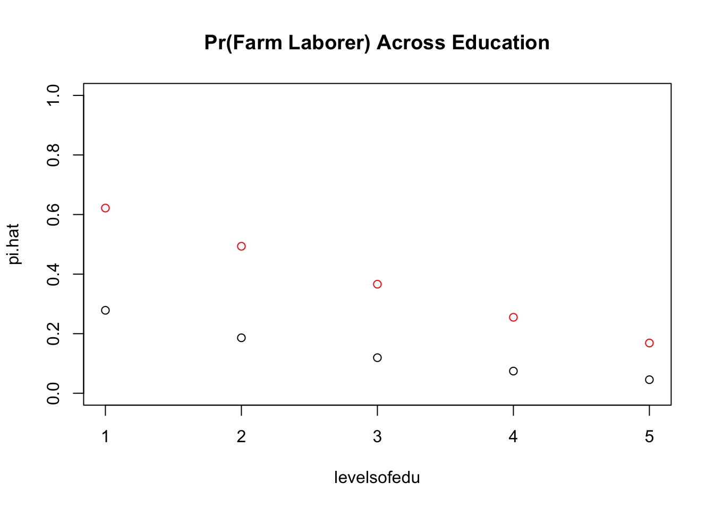
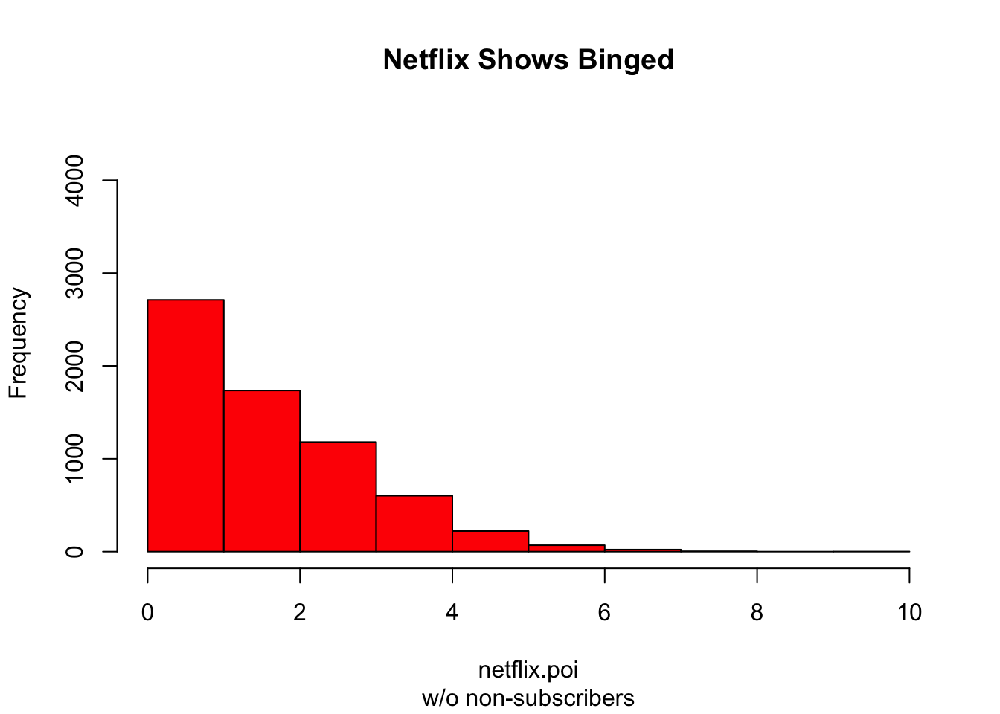
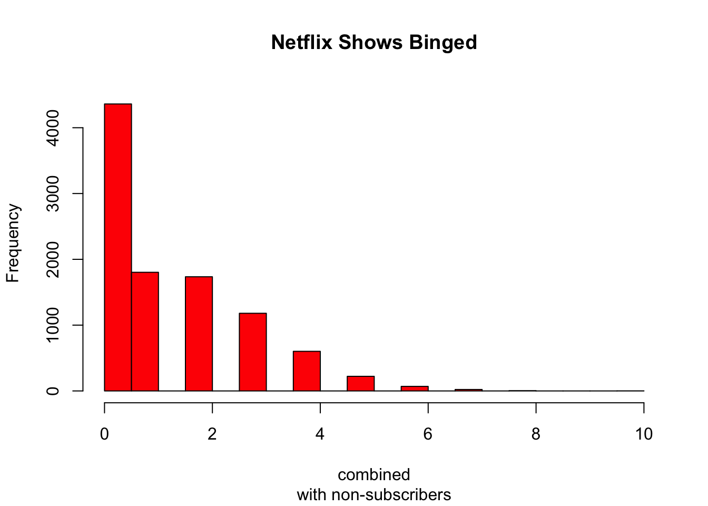
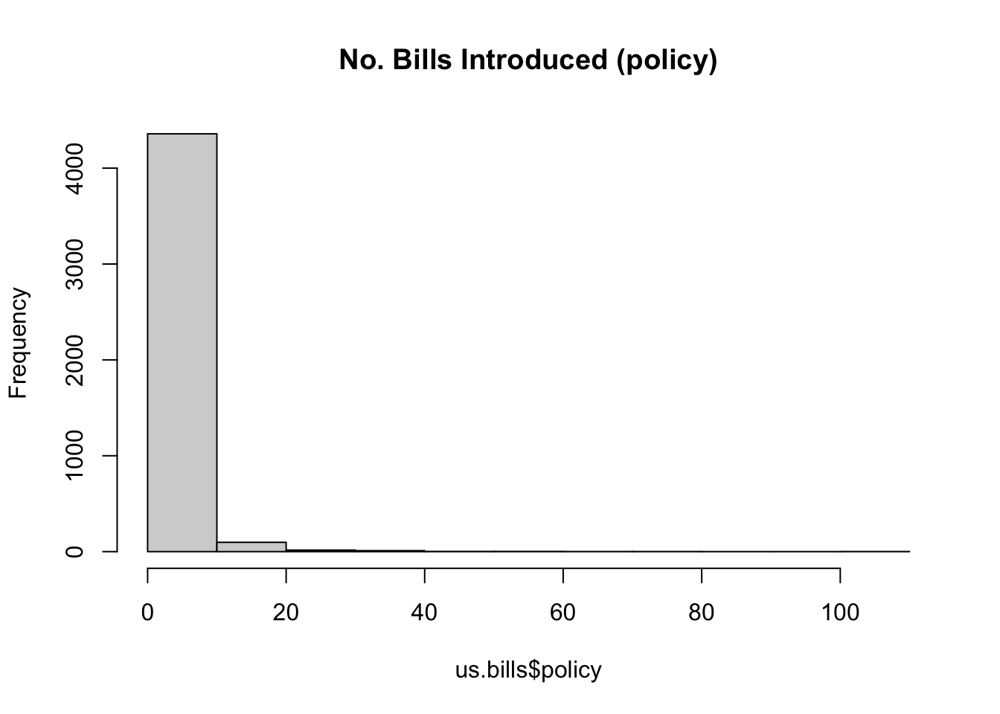

This document is incomplete and may contain errors. I will continually make updates to this document when I have available time (almost never).
These are my notes I compiled through the data sequence. They come from a variety of sources and were created to help me study for the methods comprehensive exams. These notes are by no means comprehensive nor should be substituted for your own notes/material. Special thanks to Anand Sokhey, Andy Philips, Alex Siegel, Josh Strayhorn, Brian Cadena (Econ), the various (and disgustingly extensive) YouTube videos I watched explaining this material, Reddit comments, Stack-exchange comments, and God knows who else.
Section 1: Notation
I apologize in advance as this section will seem like you are pledging for a fraternity or sorority. My insistence on being familiar with math notation is due to my own struggles. I think many students struggle with math not because of the “math” but because it is literally in a different language. You get mad and upset because you will look at an equation and you cannot understand the information it is conveying. I am a firm believer that if you can translate math notation into English, it becomes much easier to understand. Since math notation loves Greek letters, let us begin there:
Section X: Abused Words in the Discipline
Starting a PhD is daunting. It is especially so when people start throwing around words that you do not know or never encountered in your undergraduate education. Much like math notation, the verbiage in the PhD world can feel foreign. To shore this up, I provide a list of some common words that I heard a lot when starting but didn’t fully grasp until much later.
Word
Definition
Can you use it in a sentence?
Endogenous
Reverse causality (This word will haunt you).
You have selection/omitted variable bias and your relationship is thus not causal/incorrect.
Orthogonal
Independent/perpendicular (math symbol is \(\perp\))
Your treatment is orthogonal to observable and unobservable variables.
Parametric
Related to specific probability distributions. Parametric models are defined by some parameter that describes the shape of the probability distribution.
Your regression is a parametric model, meaning the shape of your distribution is defined by two parameters.
Non-parametric
Your data-generating process is not defined parametrically – not a probability distribution. Relates to machine learning methods (neural networks and stuff like that)
You may be better off using a non-parametric model like a Random Forest.
Causal
Your treatment better be random or (as-if random) it is not a causal effect.
Robust(ness)
Probability
Likelihood
Ambivalence
Struggling between competing considerations. It does not mean indifferent.
Panel Data
Observations in our data observed at different time periods.
Systematic
Predictable
Observables
Unobservables
Section X: Ordinary Least Squares (OLS)
Ordinary Least Squares, like other statistical models, is simply a model we use to understand our data and what variables relate to what. So why have it in a separate section? Because OLS is the workhorse of the statistical world. Specifically, OLS is the Best Linear Unbiased Estimator (BLUE). OLS is the best statistical model out of all the other models, if you can meet the assumption requirements. I think the power of OLS does not really manifest until you learn about other models, which we will later on.
The (Gaus-Markov) assumptions of OLS
What are these assumptions and why do we need them? We are using sample data to draw inferences about the true population parameter. A subtle but important point was just made, we do not need these assumptions to draw a regression line, we need these assumptions to make inferences. The assumptions relate to the population. We test these assumptions using our sample. We use samples to tell us what we think the true (population) relationship is. Below I formally list these assumptions in their matrix notation form.
The model specifies a linear relationship between y and X. Do not raise the \(\beta\) to a power OR transform it. We can manipulate the X’s but not the \(\beta\)’s! Doing so will no longer mean we are estimating a linear relationship.
Assumption 2: Full rank
X is an n x K matrix with rank K (n x k describes the dimensions of a matrix)
n denotes the rows (horizontal lines) in a matrix
k denotes the columns (vertical lines) in a matrix
What is “rank”?
It is the number of linearly independent columns
If the number of independent columns is equal to the total number of columns then the matrix is full rank.
This assumption relates to the scalar assumption of no perfect multicollinearity.
There is no exact linear relationship among variables
Sometimes called the “identification condition”
Assumption 3: Exogeneity of the independent variables
The independent variables are not influenced by the dependent variable or the model’s error term. The independent variables influence the outcome. This assumption in plain terms says that we should have no endogeneity.
\[
E[\epsilon_i|x_{j1},x_{j2},...,x_{jK}=0
\]
is matrix form this is written as:
\[
E[\epsilon_i|\textbf{X}]=0
\]
Assumption 4: Spherical disturbances
No autocorrelation or no heteroskedasticity (assumed homoskedasticity). Autocorrelation refers to the concept that observations do not influence each other. Heteroskedasticity refers to non-constant error variance.
Why is it that we have assumed homoskedasticity and not full homoskedasticity? It turns out that some heteroskedasticity is not fatal and can be accounted for. Generally though, we should strive for complete homoskedasticity.
Note that the assumption of no spherical disturbances can actually be encompassed into one single assumption in matrix algebra:
The off-diagonal (the zeros) represent autocorrelation if these are not zero (or at least very close) we have autocorrelation. The main-diagonal (the variance) represents our homoscedasticity assumption. If these values along the main diagonal are not the same or at least very close, then we have heteroscedasticity.
Assumption 5: Data generation
Assumption 6: \(\epsilon\) is normally distributed
This is useful for constructing our hypothesis tests and test statistics. Technically, we don’t need this for estimating our beta, just uncertainty surrounding it.
Residuals (the error)
Residuals, also known as the ‘error term’, is a critical component of OLS (and all other models). Residuals are simply the difference between out predicted value and our actual value. Mathematically this looks like:
\[
\hat{\epsilon}_i = Y_i-\hat{Y}_i
\]
It is the difference between observation and predicted (regression) line. It is the measure of how much we do not explain with our model.
Controlling for other variables
A bivariate regression is not a causal model. If we want to know the effect of some variable on \(Y\), then we need to know what other factors might be confounding this relationship. Thus, we move from a bivariate to a multi-variate regression. How do we decide what control variables to include? We will expand on this in another section related to omitted variable bias, but you should select control variables if they influence the dependent variable and correlate with your main explanatory variable.
Frisch-Waugh-Lovell (FWL) Theorem
The FWL theorem can help explain some of the intuition of what is going on when we have a multi-variate regression. Imagine we have some multivariate regression:
\[
Y=β1X1+β2X2+⋯+βkXk+u
\]
We can simply run the full regression, but the FWL states we can get the same coefficient for \(\beta_1\) using the FWL. Again, the FWL is not something you use as an alternative estimation method to regression (you could but that’s not the point of it), but it shows the intuition behind what is happening with our main variable and other controls.
The FWL shows we can derive \(\beta_1\) through three smaller steps:
23 TK
dsa TK
sda TK
FWL: Step 1
Regress Y on all other X’s except\(X_1\) and collect the residuals. Recall residuals are the difference between our line of best fit (the predicted value) and our actual observation. Basically, how much does our prediction not explain.
\[
Y=β2X2+⋯+βkXk+u
\]
We run that regression then we take the residuals of that regression:
\[
Y - \hat{Y} = \bar{Y}
\]
These are the parts of Y NOT EXPLAINED by the other controls.
FWL: Step 2
Regress \(X_1\) on all other X’s (except itself) and get the residuals. In other words, run the same regression as above but have \(X_1\) as your dependent variable.
\[
X_1=β2X2+⋯+βkXk+u
\]
We run that regression then we take the residuals of that regression:
\[
X_1 - \hat{X_1}=\bar{X}
\]
These are the parts of \(X_1\)NOT EXPLAINED by the other controls
FWL: Step 3
Now have the residuals from both Step 1 and Step 2. We take these residuals and run a regression with them. We have the residuals from step 1: \(\bar{Y}\) and the residuals from step 2: \(\bar{X}\). Thus we run the following regression:
\[
\bar{Y}=\bar{X} +\bar{\mu}
\]
When we run this regression, our coefficient for \(X_1\) will be the exact same as the coefficient in our normal multivariate regression.
FWL: Intuition
Step by step, what we just did was:
purge Y of the influence of other regressors
purge \(X_1\) of the influence of other regressors
Then we see how those “cleaned” up versions of \(X_1\) and Y move together.
This is the partial effect of \(X_1\) on \(Y\) aka the multiple regression coefficient. This does a good job of showing you what controlling for variables actually does.
The interaction
When we run an interaction, we are specifying a conditional relationship. For example, X causes Y, only if Z is active. The effect of X on Y depends on the level of Z. In other words, the effect of one independent variable on the dependent variable is conditioned by another variable.To accommodate a relationship such as this one, we multiply the two variables together rather than adding. Goal: determine whether the function \(\textbf{E}[y|x]\) is constant for different sub-samples.
You could split the same and run regressions separately. So imagine you have some interaction, lets say (income*gender), rather than running the interaction, you could do a separate regression on one sample of only males and other regression on only a sample of women. This is fine, BUT, you aren’t able to statistically show the difference between the groups.
Always include constitutive terms
Our regression with an interaction specification will obviously include the interaction term \(X_1*X_2\). It is important that you do not leave out these individual terms! When you do not include the constitutive terms, you are actually imposing a restriction on the coefficient on that variable is zero. I highly doubt you mean to do this. Intuitively, when you are saying the coefficient is zero, you are arguing there is no effect. This interpretation of your interaction will be the same only if that restriction is actually true.
Wrong:\(Turnout = Age + Age*Race\)
Correct:\(Turnout = Age + Race + Age*Race\)
There are statistical reasons for doing AND interpretation benefits for this.
Interpretation:
A few points about interpreting an interaction. Sometimes you’ll hear \(\beta_1\) interpreted as the “main effect” of \(x_i\), and \(\beta_3\) being the “interactive effect”. This is incorrect.\(\beta_1\) is simply the marginal effect of \(x_i\) on \(y_i\), when \(z_i=0\)! Note it is the exact same logic for interpreting \(\beta_2\). If we just keep the \(z\) as dichotomous, these are actually very simple to interpret.
Interactions increase multicollinearity
Interactions increase multicollinearity; this is OKAY. Why do interactions increase multicollinearity? This is because our interaction is inherently correlated with our constitutive terms that are included in the model. This is by construction! Interactions increase multicollinearity because the interaction term is linearly related to the constitutive terms, making it harder for OLS to separately identify the effect of each variable. What do we do? Nothing. No one gives a shit about this.
Confidence Intervals
Confidence intervals are an important part of the inferences we make. All else equal, we want our confidence intervals to be as small as possible. A confidence interval estimates a range of values that contains/captures the true population value for a variable of interest. Implicit in this concept, is a level of confidence that this actual/true population value is contained within the estimated range of values. A confidence interval is a range of values; it consists of an upper and lower bound. This range is designed to capture the population parameter.
The confidence interval gives us the set of all null hypothesis that we would have been unable to reject. The best guess for the population mean value is the sample mean value, plus or minus two standard errors. To get the confidence interval (let’s say 95%), we simply add/subtract 1.96 times the standard error to your estimated coefficient. For the 99% confidence interval, just add/subtract 2.33 times the standard error on either side. We cannot create a confidence interval or make inferences about the population as whole if our sample is a convenience (non-random) sample.
As the sample size increases, the standard error decreases, giving us more precision of the confidence interval.
P-Values
The most overrated, over-discussed, and over-valued metric ever. Before I explain why, let’s first walk through what a p-value actually is. The formal definition:
A p-value is:
p-value definition
A p-value is the probability of observing a test statistic value, equal to or more extreme than the value you observed, if the null were true.
Is this relationship (my coefficient I observed) real or due to chance? Remember, we are using a sample to tell us about the population. Did we just get a weird sample? A p-value is going to help us gain leverage over this! The intuition behind a p-value: How weird is it for me to have observed the result I got, if there is truly no effect. One more time, if the true effect of \(\beta\) is ZERO, the p-value will tell us HOW WEIRD it was for us to have observed the coefficient we got from our sample. If the p-value is low (decided by us) then we are saying that is is weird for us to have observed this effect due to chance. Confusingly, we decide a p-value for which to compare our calculated p-value to. Thus, we pick a threshold p-value and then figure out what the actual p-value is from our results and then compare. If the p-value we calculated is higher than our threshold, we fail to reject the null hypothesis, meaning we cannot statistically differentiate our coefficient from zero (no effect).
You will also here the p-value you described as the “probability of making a Type 1 error (false positive). When you reject the null hypothesis, you are saying it is highly unlikely to have observed this coefficient by chance, if the true effect was zero.
Why is the p-value over-rated?
For one, R or Stata will calculate the value; however, as researchers we select a p-value threshold to compare the to. If the p-value we got is lower than that threshold, we believe we have a significant relationship. That is, it is weird for us to have observed the value we got, if the true \(\beta=0\). Thus, we reject the null hypothesis. As researchers, we choose these thresholds. There is no law that states we must select this p-value.
More importantly, you don’t need to report the p-value or even the t/z-stat. Why? Because your coefficient and standard error provides that information already. To get those other values, all you need is the coefficient and the SE. This is why you hardly see econ journals report the t-stat or p-value; because they can calculate themselves and figure out the confidence intervals.
What the p-value is NOT
It does not tell you if your relationship is causal
It says nothing about the strength of the relationship
Does not take into account measurement or if the sample is truly random
The pitfalls of OLS
Section X: Functional Form
In any statistical model, you may see changes to the “functional form”. In simple terms, this means we are changing how our model is estimated. ‘Functional form’ and ‘specification’ get used interchangeably, in short, they both relate to how our regression (or any class of model we choose) is formed/constructed. Transformations used to achieve parametric linearity are called functional form adjustments.
Transformations maintain monotinicity - a fancy way to maintain the “ordering” of the data.
Which Functional Form?
Log Transformation Interpretations:
Model
Dependent Variable
Independent Variable
Interpretation of \(\beta\)
level-level
\(y\)
\(x\)
\(\Delta y = \beta \Delta x\)
level-log
\(y\)
\(log(x)\)
\(\Delta y = (\beta/100)\% \Delta x\)
log-level
\(log(y)\)
\(x\)
\(\% \Delta y = (100 \beta) \Delta x\)
log-log
\(log(y)\)
\(log(x)\)
\(\% \Delta y = \beta \% \Delta x\)
Why log? Couple of reasons:
Interpretation might make more sense
We have skewed data and is not normal.
Polynomials of x
This is super easy! We just add an extra square to our variable in our regression equation.
Why a square term? What does the square term? This goes back to your high school math. When you add a square term to a line it transforms into a parabola (think of a “U” shape).
Be careful with asymptotic data and polynomials.
Our Models are Still Linear
At this point, you might be a little confused since we describe these models as linear in the parameters. And you have probably been told that you cannot change these parameters, and that is correct. But you still might be confused, since we are transforming our \(X\)’s to allow for a non-linear relationship. What is going on? Linear in the parameters refers to linear combination. The \(\beta\)s are constants (a scalar) transforming vectors on a hyperspace. This gets math-y and you’ll probably be kicking yourself for not paying attention more in high school linear algebra.
The \(x\) can be thought of as a vector, the beta is a transformation of that vector - it does this LINEARLY.
These transformations do not transform the parameters! Think of it like this, your betas just see a number next to it, the combination of that number is still a linear transformation.
The relationship between x and y can be non-linear. When we are talking about linearity, we are talking about the \(\beta\) being linear.
Section X: Likelihood
Likelihood can be thought of as as the join probability of the data as a function of parameter values for a particular density or mass function.The key innovation in the likelihood framework is treating the observed data as fixed and asking what combination of probability model and parameter values are the most likely to have generated these specific data. The principle of maximum likelihood is based on the idea that the observed data (even if it is not a random sample) are more likely to have come about as a result of a particular set of parameters. Thus, we flip the problem on its head. Rather than consider the data as random and the parameters as fixed, the principle of maximum likelihood treats the observed data as fixed and asks: “What parameter values are most likely to have generated the data?” Thus, the parameters are random variables @ward2018maximum.
Let’s take a moment here to unpack what we mean by parameters. Parameters are random ‘variables’ (not to be confused with our variables that we include in our models) that define the shape of a distribution. There are different parameters for different distributions; when we are discussing parameters across all models, we will use theta \(\theta\). \(\theta\) is the symbol we will use to describe parameters, but within that \(\theta\) are different types of parameters that are associated with the specific distribution and receive a different symbol to denote. For example, the parameters to describe a Gaussian (normal) distribution are \(\mu\) and \(\sigma^2\). Knowing these two values describes the shape of the distribution. I can use \(\theta\) to describe these parameters, but since I’ve specified we are talking about a normal distribution, \(\theta\) is a catch all symbol for \(\mu\) and \(\sigma^2\). Likelihood is the product of probability distributions, evaluated at each of our observed data points. When we select a model, we have to choose a convenient distribution for our data. Convenient distribution in this case refers to a a parametric probability distribution.
To reiterate, in Maximum likelihood, we specify our distribution based on the type of data and then we are estimating that distribution’s respective parameters. Each distribution, whether poisson, Bernoulli, normal, etc. will have some parameter that describes the shape of distribution.
Note that the purpose of this section is to explain the logic behind the concept of likelihood. This is important as in the next section we will explain how we attempt to maximize the likelihood. That is, what parameters generated the data we observed. This is a maximization problem, where as in OLS, it is a minimization problem (minimizing the sum of the squared residuals). We now turn to the MLE method. Note, I will restate a lot about likelihood in the following section. This stuff is confusing and needs to be constantly re-explained and re-formulated for you to get a grasp on what is going on.
Section X: Maximum Likelihood Estimation (MLE)
Like everything in statistics, we are estimating. Estimating is just another jargony way to say that we are making educated guesses. Maximum Likelihood is one way we make these educated guesses. Maximum likelihood is a way we estimate the \(\beta\) coefficients, hence its full name: maximum likelihood estimation (MLE). The way we estimate the \(\beta\)’s is different from how we estimate them in OLS. In general, MLE is just a different way to estimate our \(\beta\)’s. We cannot estimate the \(\beta\)’s how we would in OLS and expect results to be accurate given the different data generating processes that can occur. Thinking of OLS and MLE as separate is somewhat of a misnomer, since OLS is actually an instance of a GLM which uses MLE. Maximum Likelihood Estimation (MLE) is a technique to find the most likely function that explains observed data.
Say you have some data. Say you’re willing to assume that the data comes from some distribution -- perhaps Gaussian. There are an infinite number of different Gaussians that the data could have come from (which correspond to the combination of the infinite number of means and variances that a Gaussian distribution can have). MLE will pick the Gaussian (i.e., the mean and variance) that is “most consistent” with your data (the precise meaning of consistent is explained below).
So, say you’ve got a data set of \(𝑦={−1,3,7}\) . The most consistent Gaussian from which that data could have come has a mean of 3 and a variance of 16. It could have been sampled from some other Gaussian. But one with a mean of 3 and variance of 16 is most consistent with the data in the following sense: the probability of getting the particular\(y\) values you observed is greater with this choice of mean and variance, than it is with any other choice.
Moving to regression: instead of the mean being a constant, the mean is a linear function of the data, as specified by the regression equation. So, say you’ve got data like \(x={2,4,10}\) along with \(y\) from before. The mean of that Gaussian is now the fitted regression model \(X'\hat{\beta_i}\), where \(\hat{\beta}= [-1.9,.9]\)
Moving to GLMs: replace Gaussian with some other distribution (from the exponential family). The mean is now a linear function of the data, as specified by the regression equation, transformed by the link function. So, it’s \(g(X'\beta)\) where \(g(x)=e{\frac{x}{1+e^{x}}}\) for logit (with binomial data).
What is a likelihood? The likelihood is the joint probability of observing our entire dataset, conditional on the observed covariates and a set of model parameters. Under the assumption that observations are independent given the covariates, the likelihood is the product of the individual probability distributions for each observation, evaluated at the observed data points.
When we select a model, we must choose a probability distribution that we believe generated the outcome variable (e.g., normal, Poisson, binomial). The model parameters describe how the covariates relate to the outcome by determining the parameter(s) of this distribution as a function of the systematic component. What is a probability distribution? A probability distribution lists possible outcomes and their probabilities.
A joint probability distribution answers the question: how likely is it that all of our observed outcomes occur together, given the covariates and the model? The likelihood measures exactly this quantity, and maximum likelihood estimation chooses the parameter values that make the observed data as plausible as possible under the assumed model.
Each observation contributes a probability term to the likelihood, but a single shared set of betas is chosen to maximize the joint probability of observing the entire dataset.
\[
\mathcal{L}(\theta)= \prod p(y_i;\theta)
\]
To the right of the equal sign is the joint probability distribution. For a joint probability distribution, the parameter value is assumed to be known or fixed. However, in the likelihood, the parameter value is unknown. The data is generated from the parameters of the model. BUT, we do not see the parameters. We have to infer what the parameters are from the data we observed. The parameters tell us how the covariates relate to the outcome. It is here where maximum likelihood plays a role.
The likelihood is a function of the parameter. The product (on the right) allows us to summarize the data into a single value that could be useful for guessing the parameter. The MLE is ultimately a guess. Is it a good guess? The MLE is a great guess, sometimes, it is the best guess we can make! MLE is a consistent estimator, as the sample size grows, the value of MLE approaches to true value. An estimator is “consistent” if the it gets closer to the true parameter value as the sample grows to infinity. Even though the true \(\theta\) is ultimately unknowable, a consistent estimator will at least get us close. Under the right conditions, the maximum likelihood estimator has the best (read: smallest) variance among unbiased estimators. This is because of the Cramer-Rao Lower Bound. Meaning in large enough samples, the variance of our ML estimate can do no better than (go below this lower bound) and is thus the best we can do. Remember, that we care about variance because of its relation to the confidence interval.
When we make models and estimate parameters from the data, we assume that the parameter that generated that data is fixed and unknown. The whole point of estimation is to try to guess what this unknown value is. Remember: we are only observing the data, and we are trying to figure out what that parameter is that generated the data! \(Y\) is random and the distribution of \(Y\) is a function of the parameter. In regression models, the parameters of the outcome distribution (such as the mean, rate, or probability) are modeled as functions of observed covariates through a systematic component, while the regression coefficients themselves remain fixed and unknown.
How do we find the maximum? We rely on computers. Their job is to find the maximum. Their job is to get the precise value. Even though we don’t have a nice analytic form to look, it’s the method of finding the maximum itself that produces those desirable qualities.
Optimization
Long story short, in statistics we rely on solutions to problems that have nice equations. However, in most cases, we don’t have this. So we have some algorithm that searches for the solution. We give the algorithm some “criteria” to find that solution. The loss function is the criteria we use – which is calculus.
How do we find the maximum? We rely on computers. Their job is to find the maximum. Their job is to get the precise value. Even though we don’t have a nice analytic form to look at, it’s the method of finding the maximum itself that produces those desirable qualities. MLE is not an estimation problem, but rather, an optimization problem. We are finding the parameter values that best fit data. We have to find the \(\beta\)’s, that maximize our \(\theta\).
IF our data has a joint probability distribution, given some \(\theta\), you can plug in the observed data that you collected to get a likelihood function of how likely it was to observe that data given those parameters. and then you optimize to find the maximum likelihood, the parameter \(\theta\) that give you mos
Optimization is look at all the possible parameters to find the maximum likelihood. We are taking derivative with respect to all parameters in \(\theta\). To find the MLE, we are still using calculus. The MLE is found at the parameter values where the derivative of the log-likelihood with respect to the parameters is zero (and the solution corresponds to a maximum). Formally, this is represented as:
OLS, we do the same thing, however, we do not have a closed form solution (we don’t have a formula like we do in OLS). In these other models, we are still trying to achieve the same thing, which is when derivative is equal to zero, but since we don’t have closed form solutions, we have to find it. Hence, the use of optimization algorithms to make our computers better at finding the solution. You don’t really need to know these algorithms. Just know that they are searching for the estimates where the derivative is equal to zero (or as close as possible).
The Structure of MLE
MLE can and should be thought of in three components:a stochastic component, a systematic component, and a link function. Luckily for us, the math of figuring out all this has already been done. Thus you will end up just picking the generalized linear model and using its appropriate functions in your statistical software.
Stochastic Component
Stochastic component: \(Y_i\sim f(\theta_i)\)
Here, \(f\) is some probability distribution or mass function. These can be Gaussian, binomial, Poisson, Weibull, etc. The stochastic statement describes our assumptions about the probability distributions that govern our data-generating process. The outcome needs to come from an exponential family.
The systematic statement describes our model for the parameters of the assumed probability distribution. We characterize the systematic components by creating a vector of explanatory variables that are linear in the predictors…these are just our normal betas setup in regression. These are the factors that affect the conditional mean of \(Y_i, \mu\).
The Link Function
There are various types of link functions and each are associated with a specific model. These link functions will look scary. All you need to know is that these are functions that mathematicians solved a long long time ago to bend the line. No I am not joking, all these are doing is bending the line. We do this because we have a boundedness problem. We are “non-linearizing” the relationship between the systematic component and the outcome. Now, we need to be careful, as these sets of models are called generalized linear models. We still consider them linear. We are transforming the predictions.
Estimating \(\beta\) in MLE
In simple terms, we are plugging and chugging. Each probability distribution has some link function that we have derived (well someone else smarter than us did). The parameter value within that link function is a function of our systematic component \(X\beta\)’s. We don’t know the \(\beta\). So we are going to plug in different values. Step by step this is what is going on:
Pick some candidate value of \(\beta\)
compute \(x_i\beta\) for all observations
apply the link function to get distribution parameters
compute the likelihood for all observed \(y_i\)’s using these parameters
Adjust \(\beta\) to increase likelihood
Repeat until the likelihood is maximized.
The betas determine Xβ, which is transformed by the link function to give the distribution parameters, and MLE chooses the set of betas that makes the observed data most likely under that distribution.
MLE is all about finding the beta vector that maximizes the likelihood, given the observed data. Multiply X by beta, transform via the link to get the distribution parameter, compute the likelihood, and iterate beta values until the likelihood is maximized; the resulting betas are your regression coefficients.
THE PARAMETER WE ESTIMATE IS A FUNCTION OF OUR SYSTEMATIC COMPONENT. FOR EVERY DISTRIBUTION.
MLE uses Logarithms
When we are estimating the likelihood, we are actually estimating the log-likelihood. Why do we do this? Without the log we run into some mathematical issues. For one, we are going to be multiplying a lot of numbers. When we multiply large or small numbers, our machines run into some issues. We are estimating a joint probability.
what happens when we multiply a bunch of probabilities together? They get incredibly small.
Logs turn multiplication into addition.
Section X: Selecting What Model To Use
How do we select which statistical model to use for inference? This choice is dependent on our data structure, specifically, our dependent variable. Don’t over think this! We use GLMs when our residuals are not normally distributed (except for linear regression which the GLM is OLS and is normally distributed).
Model
Random
Link
Systematic Component
Linear Regression
Normal
Identity
Continuous
ANOVA
Normal
Identity
Categorical
ANCOVA
Normal
Identity
Mixed
Logistic Regression
Binomial
Logit
Mixed
Loglinear
Poisson
Log
Categorical
Poisson
Poisson
Log
Mixed
Multinomial
Multinomial
Generalized Logit
Mixed
The table above is very important, and in my opinion, extremely useful. In a nutshell, all we are doing is figuring out what data we have, and picking which model is associated with that data structure to use for inference and statistical analysis. THAT IS IT! On the surface, this is incredibly simple. There is a lot of math under these, BUT don’t worry too much about it. You will be shown what R (or Stata) is doing under the hood in lecture. Don’t let this intimidate you, your professor is just showing how these models operate and really, how they came into existence. Knowing what is going on is still important, but your job as the researcher will really just boil down to knowing your data structure and picking the model associated with that structure.
A Not-So Quick Aside
The random components are probability density functions (PDFs).
Linear Regression
Earlier we learned about Ordinary Least Squares (OLS). However, we can do the same estimation within the world of generalized linear models. These are technically not the same estimations; however, they are equivalent. Linear regression is a type of generalized linear model. But are there any advantages of the maximum likelihood estimation of linear regression to the OLS estimation? No. They are equivalent. However, the OLS approach assumes a linear model and unbounded, continuous outcome @agresti2015foundations.
Dichotomous/Binary Dependent Variable
What statistical model do we use when our dependent variable is binary? This section is to provide insight into the question. First, let’s think of a few possible political science questions that would contain an outcome variable that is dichotomous: will the senator vote for the bill? Did the individual turnout to vote? The possible choices are endless, but these question examples use a dichotomous variable as our dependent variable. We are interested in what set of X variables will predict the outcome variable to be 0 or 1. Notation for a dichotomous dependent variable typically takes form below:
\[
y_i =\begin{cases}0, & \text{if trait is not present} \\1, & \text{if trait is present}\end{cases}
\]
When we have a dichotomous dependent variable, we are using a Bernoulli distribution. But what is a Bernoulli distribution actually? It is a probability distribution for a random variable that has two outcomes. The math lingo we will see typically will say something like:
\[
Y\sim Benoullli(p)
\]
In plain English, the equation is saying that our random variable (Y) is a Bernoulli distribution with the probability of \(p\). What is \(p\) though? \(p\) is the probability of our outcome variable \(y\) taking on 1! We are going to use our models to figure out what this probability is. In a Bernoulli distribution, we just need to know one parameter, \(p\), to know everything about the distribution. For comparison, in the normal distribution, we need know two parameters to know everything about the shape of the distribution, these two parameters are \(\mu\) and \(\sigma^2\).
Now at this point, you may be wondering, how do I figure out what that \(p\) is? In our modeling strategy, we have a few different avenues to estimate this parameter. In summary we can express \(p\) (also sometimes expressed \(\pi\), is a function of our covariates, \(\pi = \textbf{X}_i\beta = \beta_0 + \beta_1X_1 + …+\beta_kX_{ik}\)
There are three models we can use to estimate a binary outcome: Linear Probability Model (LPM), logistic-regression (Logit), and Probit. These three are going to estimate the one parameter \(p\) we care about to help us yield predictions about how our X’s relate to our Y. However, each of these use different strategies to do so and thus yield different results. I discuss how these models work and their potential pros and cons.
Linear Probability Model (LPM)
What is a Linear Probability Model (LPM). In simple terms, an LPM is going to estimate \(p\) using Ordinary Least Squares (OLS). In our R code, we would simply just run the regression as we would normally! Don’t over think it. Literally just put the dichotomous variable as our dependent variable and the appropriate covariates into our regression code and run the model.
Let’s work through an example to illustrate what an LPM looks like.
LPM Example
For this example, we are going to use the Titanic data set. This data set is built into R. Our dependent variable will be the dichotomous variable: whether the passenger survived or not. Our independent variable will be gender, another dichotomous variable. Thus, we are estimating the effect of gender on survival on the Titanic.
survived is a binary variable indicating whether the passenger survived (1) or not (0)
sex is the passenger’s gender (male or female)
# quick data cleaningtitanic_df <-as.data.frame(Titanic)titanic_full <-uncount(titanic_df, Freq)titanic_full$Survived <-as.numeric(titanic_full$Survived =="Yes")titanic_full$Sex <-factor(titanic_full$Sex)# lpmlpm <-lm(Survived ~ Sex, data = titanic_full)summary(lpm)
Call:
lm(formula = Survived ~ Sex, data = titanic_full)
Residuals:
Min 1Q Median 3Q Max
-0.7319 -0.2120 -0.2120 0.2681 0.7880
Coefficients:
Estimate Std. Error t value Pr(>|t|)
(Intercept) 0.21202 0.01001 21.18 <2e-16 ***
SexFemale 0.51990 0.02166 24.00 <2e-16 ***
---
Signif. codes: 0 '***' 0.001 '**' 0.01 '*' 0.05 '.' 0.1 ' ' 1
Residual standard error: 0.4165 on 2199 degrees of freedom
Multiple R-squared: 0.2076, Adjusted R-squared: 0.2072
F-statistic: 576 on 1 and 2199 DF, p-value: < 2.2e-16
We now have our LPM output with our relevant coefficients! What do these numbers actually mean though? The intercept is where our line of prediction crosses the Y-axis. Our intercept is actually being the predicted probability of surviving when being a male. The predicted probability of surviving as a male is .21. The effect of being female and surviving is .52. Remember that this coefficient on female is the difference in probability compared to the reference group (men)! So, being female is predicted to have a .52 higher probability of surviving compared to males. In plain English, this means males had a baseline survival rate of 21%; females had a baseline survival rate of 73%. This effect is statistically significant.
The Problems with LPM
Everything ran and we got a coefficient, so what is the problem with this? Note that some of the problems with LPM are debated, and many people (economist) will tell you to just run it. However, it is still important to note its problems.
Problem 1: Impossible Predictions
When we run an LPM, we can get impossible predictions. This means we can predictions that are below zero (negative) or above 1. Given probability can only be between 0 and 1, these possible predictions don’t make any sense. Let’s look at another example with the cars data set:
mtcars$foreign_car <-ifelse(mtcars$vs ==1, 1, 0)lpm <-lm(foreign_car ~ wt, data = mtcars)wt_grid <-data.frame(wt =seq(min(mtcars$wt), max(mtcars$wt), length.out =100))wt_grid$fitted_lpm <-predict(lpm, newdata = wt_grid)# Plot without jitterggplot(mtcars, aes(x = wt, y = foreign_car)) +geom_point(color ="blue", size =3) +# actual 0/1 points, no jittergeom_line(data = wt_grid, aes(x = wt, y = fitted_lpm), color ="red", size =1.2) +# full LPM linescale_y_continuous(limits =c(-0.1, 1.1), labels = scales::percent_format()) +labs(title ="Linear Probability Model: Fitted Values Across Full Range",x ="Weight (1000 lbs)",y ="Probability of Being Foreign" ) +theme_minimal()
Warning: Using `size` aesthetic for lines was deprecated in ggplot2 3.4.0.
ℹ Please use `linewidth` instead.
Warning: Removed 9 rows containing missing values or values outside the scale range
(`geom_line()`).

Notice how when the weight is around ~4,800 lbs, the line is below zero. According to this, when the weight of a car is ~4,800, the predicted probability of being a foreign car is less than zero, which is nonsensical.
Problem 2: Errors are not normally distributed
Recall we are using OLS to estimate the probability of either zero or one. OLS makes some important assumptions, one of those: errors are normally distributed; is violated when we use the LPM. But why? Think for a moment what a residual is.
\[
\hat{\epsilon}_i = Y_i-\hat{Y}_i
\]
In our LPM, the residuals can only take two possible values, meaning it is impossible for the residuals to be normally distributed. If we were to plot the residuals, they would give us parallel lines. The graph below certainly does not look normally distributed! Remember why the normally distributed errors are important, they allows us make inference as our distribution of \(\hat{\beta}\) depends on the distribution of \(\epsilon\).
residuals_lpm <-residuals(lpm)ggplot(mtcars, aes(x = wt, y = residuals_lpm)) +geom_point(color ="blue", size =3) +# points exactly on linesgeom_hline(yintercept =0, linetype ="dashed", color ="red") +labs(title ="Residuals from Linear Probability Model",x ="Weight (1000 lbs)",y ="Residuals" ) +theme_minimal()

Problem 3: Errors \(\epsilon\) are heteroskedastic TK
All LPMS have heteroskasticity. This is a similar problem to problem 2. Recall that our Gauss-Markov assumptions require homoskedasticity (constant error variance).
Problem 4: A one unit increase in X affect Pr(y=1) may not be true across the range of Xs.
This problem will be elucidated in the following sections in logit and probit. Essentially, different values of X may have different levels of probability for Y. This relates to the linearity form.
Benefits of the LPM
Despite the inherent drawbacks, LPM is not something that should be avoided. Many researchers like it for a variety of reasons but do recognize these issues when using it.
Benefit 1: Linear Interpretation of \(\beta\)’s
Similar to OLS, we like linearity because it is easy to interpret! This becomes more apparent when you move towards interpreting a logit.
Benefit 2: Simple and Cost Efficient
It is super efficient to run the LPM. Your computer is doing less math and thus less computational power to execute. This isn’t really a big deal and won’t matter much. However, this benefit has proved useful once when I was using big data 100 million + observations; logit takes longer to run and I was also limited by computational credits that cost money (more money meant I could use a better computer, thus faster execution times; however, I couldn’t afford it) however, I could use the LPM since it was most cost efficient to run and could be executed with significantly less computational power.
Benefit 3: Works well if \(X\)’s are distributed Bernoulli
If your independent variables are dichotomous as well (Bernoulli), then your LPM fairs much better. Why?
Logistic Regression (Logit)
The logit is another way to estimate the parameter \(p\) such that we can estimate the probability of our \(Y\) values conditional on our set of variables. The logit is going to help us avoid the issues inherent in the LPM in a few ways.
What is the Logit?
The logit, like the LPM, models the probability of an event. We use it when our dependent variable is zero or one. The logit is going to bound our predicted values between 0 and 1. Note that the LPM does not do this and allows for predicted results from \(-\infty\) to \(\infty\). Again, what we want to do is to estimate the probability \(p\) aka \(\pi\) as it will tell us everything about the distribution. Thus:
\[
\pi_i=g(X_i\beta)
\]
\(\pi_i\) = the probability that \(Y_i=1\) for observation \(i\)
\(X_i\beta\) = the linear combination of predictors (our covariates!)
\(g(\cdot)\) = the link function that transforms the linear predictor into probability. More on this below.
Expressing \(\pi_i\) as an Odds Ratio
What are ‘odds’ actually? Odd take the probability of an event occurring and divide it by one minus the probability. It is the ratio of success to failure. Thus:
\[
Odds = \frac{Probability \ Event \ Occurs\ (p)}{ Probability \ Event \ Does \ Not\ Occur \ (1-p)}
\]
But why odds ratios? Odds ratios are the proportion of odds under on assumption to odds under a different assumption. Odds ratios specifically have the seemingly nice feature of being invariant to scale, since a 1 unit change in x produces an odds ratio of \(Exp[\beta_1]\) regardless of the baseline.
Logging the Odds
We then log the odds ratio we calculated. Why do we take the log? For each observation, we have an associated odds ratio. We are multiplying the odds across predictors together. Multiplying odds ratios can become either very large or very small which makes it mathematically messy to use. We take the log of the odds ratio because it converts the multiplicative effects to additive effects, making our result linear and easier to interpret.
All this does equation does is take the log of the odds ratio. This is for mathematical reasons. We then model it as a linear function of the predictors:
Each \(\beta\) is the effect of the corresponding predictor on the log-odds of \(Y=1\). We are going to estimate those \(\beta\)’s using maximum likelihood. THIS IS THE LINK FUNCTION!
Example and Interpretation
The logit can be confusing to interpret. For one, the values we get out of our model are expressed as the log odds…how the hell do we interpret that? Second, the effect size can be different at different levels of X. Let’s go through an example. We are trying to predict the probability of an individual getting diabetes based on some covariates:
# Load example data data<-read.csv("https://raw.githubusercontent.com/plotly/datasets/master/diabetes.csv")colnames(data)<-tolower(colnames(data))data$outcome<-as.factor(data$outcome) # Multivariate modellogistic <-glm(outcome ~ bmi + glucose + bloodpressure,data=data,family="binomial")summary(logistic)
Call:
glm(formula = outcome ~ bmi + glucose + bloodpressure, family = "binomial",
data = data)
Coefficients:
Estimate Std. Error z value Pr(>|z|)
(Intercept) -7.182306 0.635462 -11.303 < 2e-16 ***
bmi 0.079793 0.013565 5.882 4.05e-09 ***
glucose 0.035746 0.003328 10.740 < 2e-16 ***
bloodpressure -0.007420 0.004862 -1.526 0.127
---
Signif. codes: 0 '***' 0.001 '**' 0.01 '*' 0.05 '.' 0.1 ' ' 1
(Dispersion parameter for binomial family taken to be 1)
Null deviance: 993.48 on 767 degrees of freedom
Residual deviance: 769.07 on 764 degrees of freedom
AIC: 777.07
Number of Fisher Scoring iterations: 4
We can see we have a similar table. However, these coefficients represent the log-odds effects of having diabetes. These are not probabilities. There are quite a few ways to interpret these results and present them. These include:
Odds Ratios
First difference
Partial derivatives
Graphical
Why do we need all these interpretation methods? We can have different levels of effects at different values of X! To illustrate the point, let’s look at this graphically in a simulated logit curve:
x <-seq(from =-10, to =10, by =0.1)pi.1.1<-1/(1+exp(-(1+1*x)))par(mfrow =c(2,2))plot(x, pi.1.1, type ="l", main ="1/(1+exp(-(1+1*x)))", col ="coral", lwd =3 )dev.off()
null device
1
Think about this for a moment and follow the “S”. This is the probability which is no longer linear. The effect of X varies depending on it’s value!
However, before we jump into discussion of the different ways to interpret the coefficient, let’s look at won’t be different: AIC/BIC.
AIC - Akaike Information Criterion
Returning back to our model of diabetes, we see it reports an AIC of 777.07. But what does this mean? AIC is a measure of goodness-of-fit. Think of this as the logit version of the \(R^2\). It is a measure of how well the model fits the data while penalizing complexity. How do we derive the AIC? The formula is:
\[
AIC = 2k-2ln(\hat{L})
\]
Where \(k\) is the number of estimated parameters (intercept + coefficient)
Where \(\hat{L}\) is the maximized value of the likelihood.
Lower is AIC is better. But lower to what? The purpose of AIC is not to measure goodness-of-fit in isolation, but rather a point of comparison. If we compare the AIC of one model to a model with different variables, we will get different AICs. Then the AIC that is lowest tells us which model is a better goodness-of-fit. In summary, the AIC provides a method for assessing the quality of your model through comparison of related models.
Coefficients - Odds Ratio Interpretation:
The connection between log-odds and odds ratio: you can have a negative log-odds but you cannot have a negative odds. If you have a negative coefficient from your logit that translates to the coefficient having an odds ratio of less than 1.
Odds ratios can be a bit confusing. They are not probabilities. A 10% increase is not a 10% increase in probability. Odds ratios are constant across values of X.
Note that we can have R exponentiate the values for us:
Intercept - like in any other model, the intercept represents the log-odds of having diabetes when all variables are equal to zero. The log-odds of our constant is -7.182306. But what does that actually tell us? Let’s convert the log-odds to odds. We can do this by exponentiating them. The odds of having diabetes when all predictors are at zero is .00076. The odds of having diabetes with all other predicted values at zero is 0.00076 to 1.
bmi - the log-odds of bmi on outcome is .079793. When we convert this value to an odds ratio we get: 1.083. For every 1 unit increase in BMI, the odds of having diabetes increases by a factor of 1.083, meaning the odds of diabetes increases by 8.3%.
glucose - the log-odds of glucose on outcome is .035746. For every 1 unit increase in glucose level, the odds of having diabetes increases by a factor of 1.036, meaning the odds of diabetes increase by approximately 3.6% for each additional unit of glucose.
bloodpressure - the log-odds of bloodpressure on outcome is -.007420. For every 1 unit increase in blood pressure, the odds of having diabetes increases by a factor of 0.9926, meaning the odds of diabetes decrease by approximately .74% for each one unit increase in blood pressure. However, this is not a statistically significant effect.
Coefficients - First Difference Interpretation:
The first difference is, if you make a fixed, concrete change in x, such as a 1 unit, how much does that affect \(Pr(y)\). Think about this visually for a moment. In OLS, this is not an issue because we have a straight line. Now imagine if that line is curved, the change in effect could be different (not linear). Why do we like probability? Because probability is easy to understand (0-100%) and first differences reflect the nonlinear effect of X on probability in a logistic model. Remember: the effect of X depends on where we are on the curve (sigmoid).
For example:
At low probability (P=.05), a 1 unit increase in X might only increase the probability to .06. A one percentage point change.
At medium probability (P=.5), a 1 unit increase in X might increase the probability to .52. A two percentage point change.
At high probability (P=.9), a 1 unit increase in X might increase the probability to .91. A one percentage point change.
In summary, a change in X can have different levels of effect, our odds interpretation will not account for this!
Coefficients - Partial derivatives
Partial derivatives show the instantaneous effect of a change in X, give a set of values in \(\pi\). For our diabetes example let’s walk through the partial derivative interpretation:
# partials show the instantaneous effect of a change in X, given a set value of pi (since we said the inflection point makes these effects non-linear)pi <-seq(from =0, to =1, by =0.10)partials <- logistic$coefficients["glucose"]*pi*(1-pi)partials
plot(pi,partials, main ="Instantaneous effect of Glucose | pi")

logistic$coefficients[("glucose")]/4# maximum instantaneous effect
glucose
0.008936573
How do we interpret these results?
Coefficients - Graphical
This method of interpretation is probably the one you would actually present. People like graphs!
# Baseline coefficients (all except the variable to plot)coef.baseline <- logistic$coefficients[c("(Intercept)", "bmi", "bloodpressure")]# Baseline values for other variablesx.means <-c(1, 25, 80) # intercept=1, BMI=25, BP=80# Compute linear predictor for baseline (scalar)xb <-sum(coef.baseline * x.means)# Values of glucose to plotglucose_levels <-seq(70, 180, by=10)# Compute predicted probabilitiespi.hat <-1/ (1+exp(-(xb + logistic$coefficients["glucose"] * glucose_levels)))# Plotplot(glucose_levels, pi.hat, type="b",main="Predicted Probability of Diabetes Across Glucose Levels",xlab="Glucose Level", ylab="Predicted Probability",ylim=c(0,1), col="blue", pch=16)

We are holding our other variables constant. bmi = 25 and bloodpressure = 80. We are the seeing how the probability of getting diabetes varies as we change glucose level.
Let’s do another example but with a political science table. This example will use the INES data set and was done in class. You can download the data here: [data].
ies <-read_dta("survey_INES (2).dta")logit.glm <-glm(farm_laborer ~ dalit + brahmin + male + muslim + education, data = ies, family =binomial(link = logit))summary(logit.glm)
Call:
glm(formula = farm_laborer ~ dalit + brahmin + male + muslim +
education, family = binomial(link = logit), data = ies)
Coefficients:
Estimate Std. Error z value Pr(>|z|)
(Intercept) -1.37039 0.09373 -14.620 < 2e-16 ***
dalit 0.58067 0.08801 6.598 4.18e-11 ***
brahmin -1.18473 0.28786 -4.116 3.86e-05 ***
male 0.36065 0.07796 4.626 3.73e-06 ***
muslim 0.23464 0.10800 2.173 0.0298 *
education -0.52300 0.05468 -9.565 < 2e-16 ***
---
Signif. codes: 0 '***' 0.001 '**' 0.01 '*' 0.05 '.' 0.1 ' ' 1
(Dispersion parameter for binomial family taken to be 1)
Null deviance: 5492.7 on 6750 degrees of freedom
Residual deviance: 5235.9 on 6745 degrees of freedom
AIC: 5247.9
Number of Fisher Scoring iterations: 6
This is the output from our logistic regression. Like before, these are given to us as the log-odds, which can be somewhat difficult to interpret. We are going to use a graphical method to show how the effect of variable of interest, education, changes the probability.
# plot \hat{\pi} across a variable (this case education), holding all else constantcoef.means <- logit.glm$coefficients[1:5] # grab all but educationcoef.means
(Intercept) dalit brahmin male muslim
-1.3703942 0.5806719 -1.1847316 0.3606510 0.2346365
# let's look at a Dalit who's male and not Muslimx.means <-c(1, 1, 0, 1, 0) x.means
[1] 1 1 0 1 0
xb <-as.matrix(x.means*coef.means) xb
[,1]
(Intercept) -1.3703942
dalit 0.5806719
brahmin 0.0000000
male 0.3606510
muslim 0.0000000
plot(levelsofedu,pi.hat, main ="Pr(Farm Laborer) Across Education", ylim =c(0.0,0.5))

The probability of being a farm laborer decreases as level of education increases. Of course, we could intuitively tell this from the table; however, what this graph provides is the probability for each level of education when the baseline is Dalit, male, and not Muslim.
As you may realize, these probabilities are in relation to our baseline, Thus, when we change our baseline, the effect of education will be different. To show this, let’s now change our baseline to a Muslim woman.
# just to show you how what you set to clearly changes this story:pi.hat2 <-1/(1+exp(-(1.0198183)-logit.glm$coefficients[6]*levelsofedu)) # Now change to muslim woman (0.2113876 [constant] + 1.0198183 [muslim])plot(levelsofedu,pi.hat, main ="Pr(Farm Laborer) Across Education", ylim =c(0,1))lines(pi.hat2, type ="p", col ="red", pty ="3")

As we can see in the graph comparing the probabilities relative to their baseline, we see the different levels of effect of education on being a farm laborer. This interpretation is super easy to understand and communicates a lot of information quickly. However, it is dependent on what our baseline is. We need to justify our baseline such that we aren’t just
Probit
The probit is an alternative cumulative density function (the cumulative standard normal density) that can be used as an alternative to logit models. It is short for “probability unit”. These do not differ very much from logit, but you tend to see less of these used in political science. Probit does not use the binomial distribution but rather, the normal distribution. The estimates will be provided as a z-score, making it somewhat less intuitive.
Probit Link Function
\[
\Phi^{-1}(\gamma)
\]
Where \(\Phi\) is the cumulative density function (CDF) of a standard normal distribution. I’m not going to break this open.
Probit Example and Interpretation
Interpreting probit is quite difficult and less intuitive. This is because it uses a z-score!
probit.glm <-glm(farm_laborer ~ dalit + brahmin + male + muslim + education, data = ies, family =binomial(link = probit))summary(probit.glm)
Call:
glm(formula = farm_laborer ~ dalit + brahmin + male + muslim +
education, family = binomial(link = probit), data = ies)
Coefficients:
Estimate Std. Error z value Pr(>|z|)
(Intercept) -0.86594 0.04856 -17.833 < 2e-16 ***
dalit 0.32714 0.05029 6.505 7.76e-11 ***
brahmin -0.53717 0.12529 -4.287 1.81e-05 ***
male 0.20224 0.04240 4.770 1.85e-06 ***
muslim 0.12424 0.05963 2.083 0.0372 *
education -0.26350 0.02644 -9.966 < 2e-16 ***
---
Signif. codes: 0 '***' 0.001 '**' 0.01 '*' 0.05 '.' 0.1 ' ' 1
(Dispersion parameter for binomial family taken to be 1)
Null deviance: 5492.7 on 6750 degrees of freedom
Residual deviance: 5238.3 on 6745 degrees of freedom
AIC: 5250.3
Number of Fisher Scoring iterations: 5
So we run the same specification, only this time we are using the probit. On average, the effect of being Dalit is associated with a .327 z-score increase in being a farm laborer, all else equal. Recall that our z-score relates to our test statistic. We can conduct a similar interpretation across the other variables estimated.
So why do we have different coefficients? Let’s compare the two really quick using a stargazer table:
Now we can see clearly we have different coefficients between the probit and logit. Again probit coefficients are showing a unit increase in \(X\) has a z-score change in \(Y\). We can also observe that the effect sizes (only due to different scale of units) is bigger within the logit estimation.
Logit or Probit?
Logit? Probit? Fuck it. Which one should we use? To be honest, I haven’t seemed to find a good answer to this. They are both nearly identical in results. However, the logit is considered the canonical link function, and thus has considerably more resources on it. Additionally, the logit uses the log of odds-ratios for interpretation.
Aside from greater resources available for the use of the logit, it seems the logits popularity might also be a result of it’s coefficients being larger than probits. It is not that logit estimates a different true effect, it’s just that the coefficient is higher because of the units our estimation is using. While it is not actually bigger effect size, it gives the appearance of being bigger. Perhaps the best reason I can give for its’ use is that bigger = better. Again, there is probably a specific reason to choose one over the other, but I have not been taught that and don’t really know.
An important point though is that probit is using the normal distribution. Intuitively this refers to a “latent index”. Meaning our variable may be coded as a dichotomous but underlying it might be a continuous data generating process; some legislators vote yay or nay; some legislators are very likely to vote yay, others may be on the fence.
In this section, we look at the models we use when we have a categorical variable with more than two categories for our dependent variable. There are two classes of choice variables:
Multinomial Choice
unordered (nominal)
no natural rank or order
ex: take the bus, train, car, or bike to work
Which variables predict support for the 3 candidates?
Ordered Choice
When choices have a natural rank
a form of ordinal data
Distance my vary between choices
ex: education level.
These outcomes do not share the same distribution that our binary variable had (the Bernoulli distribution). These outcomes are distributed from a multinomial distribution. We will start with the ordinal models first because they are relatively easier.
Ordered Logit
These models are appropriate for when we have a small number of ordered categories. Example: our DV is a survey question with ‘Strongly Agree’, ‘Agree’, ‘Disagree’, ‘Strongly Disagree’. These models have the same sort of trade-off that we observe in OLS - that is, we could just do OLS, but will have similar issues like out of bounds predictions and weird residuals. Running OLS on an ordered variable assumes that the data is interval: going from a 1 to 2 is the same distance as 3 to 4, or similar. Thus, we need to be aware of the distance between our categories. If we are concerned, we should certainly plan on using this model rather than a simple OLS estimation.
Multinomial Logit
This isn’t much different, only now we have multiple categories instead of just 0 or 1. So our goal here is to find out what variables predict which category is most likely to be selected. Like with categorical variables on our independent variables, we need to have some sort of baseline. We will do the same here just on our dependent variables. Thus,
Interpretation
Regression output from R will be in the log-odds.
Multinomial Logit Code
# read data ml <-read.dta("https://stats.idre.ucla.edu/stat/data/hsbdemo.dta")
with(ml, table(ses, prog))
prog
ses general academic vocation
low 16 19 12
middle 20 44 31
high 9 42 7
ml$prog2 <-relevel(ml$prog, ref ="academic") # define baseline category for DVtest <-multinom(prog2 ~ ses + write, data = ml)
# weights: 15 (8 variable)
initial value 219.722458
iter 10 value 179.982880
final value 179.981726
converged
Selection models are used when outcomes are observed only for a non-random subset of the population, leading to selection bias. A classic example is wages. Suppose we regress wages on education, experience, and other covariates. Wages, however, are only observed for individuals who choose to work. Because the decision to work depends partly on unobserved factors such as ability, motivation, or health—factors that also affect wages—the observed sample of workers is not random. As a result, running OLS on observed wages leads to biased and inconsistent estimates of the wage equation, and we cannot interpret the estimated coefficients as the causal effects of education on wages for the full population. We technically have a truncated sample. The problem is who we observe depends on unobservables related to wages.
With this in mind, there are actually two data generating processes going on.
Whether you work or not (dichotomous)
Given that you work, what are your wages? (continuous)
To be quite honest, I’m not sure how much this model is even used today. I don’t think I’ve ever seen it in a political science paper. And you’ll notice this is attempting to solve a problem related to causal inference. Causal inference has come a long way since Heckman developed this 40 years ago. When we design research studies, we generally have a much better understanding of what our counterfactual is, and we have developed better causal designs to make it easier to identify the causal estimate. As such, selection bias is usually accounted for through the design process of our research. To reiterate, selection models are trying to deal with the problem of selection bias, specifically selection bias as a result of unobservables, if the selection bias was due to observables, we would simply condition on those variables to then argue our treatment is as-if random. There are more causal inference methods to account for these selection bias problems – DiD, IV, Natural Experiments, etc – which still make assumptions, but their commonality and intuition has led to the decline in usage of selection models.
Heckman Selection Model
The Heckman Selection Model is going to help us with this selection problem. It was developed by James Heckman, for which he won a Nobel Prize for. The idea behind the model is that we will estimate the extent of selection bias and control for it.
Steps:
Estimate the selection equation using probit
Count Models
What if we observe multiple Bernoulli trials over some length of time? This gives rise to count data. Importantly, count data exists within a set [0, \(\infty\)] (it is not possible to have negative counts). Like with other data generating processes, we have a boundedness problem we must account for.
But why can’t we use OLS with count data? We can (and this was popular to use in political science back in the day) but it leads to serious problems. First, when \(\lambda\) is large enough, we can run OLS. However, if \(\lambda\) is small (and this is so with truncation at zero) we should estimate a Poisson regression. Estimating OLS when we should have instead used a Poisson, will lead to inefficient, inconsistent, and biased estimates.
Poisson
The Poisson distribution is a probability distribution (no different than the other ones we have looked at).
The probability mass function (the discrete equivalent to a pdf) for the poisson distribution is as follows:
\[
P(X=x)=\frac{\lambda^xe^{-\lambda}}{x!}
\]
For \(x=0,1,2,3,…\infty\)
The mean\(\mu = \lambda\). We could have used \(\mu\) and some people do that but because people are annoying, we are using \(\lambda\) to represent the mean in the poisson distribution.
The variance\(\sigma^2=\lambda\). The mean and the variance in a poisson are equal! We are only estimating one parameter. If we know \(\lambda\), it tells us everything we need to know about distribution. While it is nice that the variance is equal to the mean, this is not always true. When this occurs, our model will likely have to change to accommodate this. More on this later below. Poisson can generally suffer from right skewness, especially when x (\(\lambda\)) is small. As x gets bigger, the distribution becomes more symmetric. With this in mind (and discussed a bit above) we could get away with estimating at Poisson when Y is distributed normal, since the Poisson converges on the normal as \(\lambda\) gets large.
In Poisson regression, we take the log of the conditional mean of the outcome, set it equal to a linear predictor, estimate the coefficients via MLE, and then exponentiate to obtain the expected count \(\lambda_i\). The log of the mean is linear!
Poisson Regression
\[
\begin{cases}ln(\lambda) = \beta_0+\Sigma\beta_iX_i & Systematic \ component \\ y \sim pois(\lambda) & Random \ component\end{cases}
\]
Where \(\lambda\) is the expected number of occurrences for specified values of the explanatory variables. The coefficients \(\beta_i\) are unknown and must be estimated from sample data. Notice the left hand side has a log (ln). This will take the positive values of our count variables and reconcile the fact the left side can take any value. This is the link function and all this is doing is bounding our results to be [0, \(\infty\)].
That log we took is invertable. So our poisson regression looks like:
To run a Poisson regression in R, we run the following code (note the code below does not do anything and just provides the syntax to run it with your associated data):
Poisson Assumptions
Events are occurring independently. That is, the fact that one event does not influence future or past events occurring. The probability that an event occurs in a given length of time does not change through time. The events are occurring randomly and independently. It is easy to lose track of the fact that Poisson distribution describes the event count per unit of time (per month, per year, etc.). Standard count models assume all units of have the same exposure time. This is an important assumption and you should be aware of it, and assess whether it is true in your data.
Poisson Regression - Under the Hood
Recall that we just need to estimate \(\lambda_i\) to describe the distribution. Of course, we want to know the relationship between our systematic component (Xs) and our random component (Y). Since we are modeling count data, we will predict the conditional mean using a log-linear link:
The \(\lambda\) represents the expected average value of y conditional on the covariates, \(x_i\). Why do we take the exponent?\(x_i\pmb{\beta} \in (-\infty, \infty)\) The exponent will map the systematic component to between the values for our Poisson, which is 0 and positive infinity. This will guarantee the mean count is positive.
We are not taking the log of the linear predictors. We are taking the log of the conditional mean.
Poisson Interpretation
The coefficient we get is a change in the log-likelihood. That is, a one unit change in \(x\) has a \(\beta\) change in the log of the expected count of \(y_i\). Like any of the previous models, these can be bit wonky to read from a regression table.
Example from the internet (authors used Stata)
mathnce represents the coefficient on daysabs. mathnce refers to a math standardize score. Thus a one unit increase in mathnce , the difference in the logs of expected counts would be expected to decrease by -.0035232, holding all else (other variables) constant. This result yields a p-value of .053. If our alpha level is .05, we would reject the null hypothesis and conclude the effect is not statistically difference from zero. What our mathnce represents is really a one unit increase in mathnce, decreases daysabs by a factor of \(e^{-.0035232}\approx 0.99648\)
This interpretation would follow similarly for the other covariates. However, like logit, the effect of this magnitude depends on a baseline.
Incidence-Rate Ratio (IRR)
IRR’s seem to be most common method of interpretation outside of the raw reports in regression tables. IRRs are obtained by exponentiating the Poisson regression coefficient. Note that we actually did this above and got a value of .99648. A one unit increase in mathnce is associated with .00352% in the expected count, all else equal.
Overdispersion
Poisson regression assumes that the variance of \(y\) equals the mean of \(y\), but in some/many datasets the variance is greater than the mean, which we call “overdispersion”. There is also underdispersion (but is less common) and occurs when the variance is less than the mean. In notation, overdispersion is shown as: \(\lambda < Var(Y)\). If a random variable is overdispersed, it was not generated via a Poisson process. Overdispersion is extremely common and hugely problematic.Why do we care about overdispersion? It influences our standard error and thus our standard error is underestimated; the model is assuming lower variance than is actually true. This will in turn, influence our p-value and result in a type 1 error. What causes overdispersion? There are predictable variables that we have not included (omitted variable bias), need to look at theory. Or we might have clustering or heterogeneity in the sampled population. Finally, we may more zero values than expected (zero-inflated).
What do we do with overdispersion? We can do a quasi-poisson. The quasi-poisson basically takes the raw Poisson model, estimates the dispersion, and adjusts the standard errors for it. OR, we can also do a negative binomial, which is what most people seem to do. The negative binomial models a slightly different distribution with an extra parameter that characterizes the variance, and derives a different likelihood based on that. More on negative binomial below.
How do we know if we have overdispersion?We only care about conditional overdispersion, i.e., how much overdispersion is left over once we’ve modeled the conditional mean. A casual (first-cut) test is simply to take the mean and variance of our DV and see how far apart they are. This is not terrible but is also not precise. It might be better to think over overdispersion as a form of specification error.
Poisson Issues
As discussed earlier, Poisson makes a critical assumption that the variance and mean are equal. This is commonly not true.
Negative Binomial
We use these also for count data! When we use a Poisson we make an assumption that may not be true, which is the mean is equal to variance. The negative binomial will have a different mean and variance. That is the difference! By relaxing this assumption, we can allow for overdispersion. Recall that if we have overdispersion, our random variable was not generated via a Poisson process.
The negative binomial distribution describes the number of Bernoulli trials needed to obtain set number of successes. For instance, suppose we flip a fair coin until the fourth head. While there is no upper limit on the number of flips that could be needed, larger values are increasingly unlikely. The negative binomial distribution can also be viewed as modeling the number of success before a desired number of failures. For our purposes, and to see the connection with the Poisson, it is easiest to think about it as a distribution that allows unobserved heterogeneity in a count process. In my humble opinion, just run a negative binomial model before doing a Poisson.
When to use a negative binomial
Negative binomial regression is for modeling overdispersed count outcome variables.
Negative binomial regression can be used for over-dispersed count data, that is when the conditional variance exceeds the conditional mean
It can be considered as a generalization of Poisson regression since it has the same mean structure as Poisson regression and it has an extra parameter (r) to model the over-dispersion.
Negative Binomial under the hood
Within the conditional mean framework, the Poisson models:
\[
\lambda_i = Exp[\pmb{X}_i\beta]
\]
When we do this, we are saying that all variation in \(\lambda_i\) is due to observed heterogeneity. Instead suppose the following:
Let \(\gamma_i\) denote \(Exp[\epsilon_i]\), then we have \(\hat{\lambda}_i=\lambda_i\gamma_i\). Hence, our mean is the Poisson conditional mean, scaled by a multiplicative term based on the error. It is necessary to assume something about the distribution of \(\epsilon\), and in particular we want \(E(\gamma_i)=1\) We still assume the baseline Poisson process. However, we do not know \(\gamma_i\), and only know \(x_i\); we can construct an integral to sum across all the possible values of \(\gamma\), effectively averaging across. But doing so forces us to specify a distribution, we will use the Gamma distribution.
Negative Binomial in R
When running a negative binomial in R, we will use the MASS package. So make sure you have that installed and running! Note the code below does not run.
Poisson or Negative Binomial Model?
Which model do we chose? The negative binomial estimates only one more parameter than the Poisson/quasi-poisson, there is little efficiency downside to using it. Thus, defaulting to negative binomial is defensible. However, it is usually recommended to prefer the Poisson setups in small samples, as NB can be a little oversensitive when your estimates of the variance aren’t that precise. Also be careful when doing more ‘fancy’ modeling; sometimes the simplicity of the Poisson/quasi-Poisson is preferred, e.g. for hierarchical modeling.
Extensions of Count Models
All of these extensions can be done with either Poisson or Negative Binomial distribution assumptions. Like before, you should probably just lean towards using the negative binomial model. The idea is similar to the Heckman selection models, the observed data are generated by more than one process.
Zero-inflated models
Zero-inflated models are designed to handle cases where we have ‘excess’ zeros. Zero-inflated doesn’t just mean “a lot of zeros”. The ZI setup is designed for situations where you have a mixture of data-generating processes. Think of carving up your observations into two pools:
‘Eligible’: observations which are experiencing the same event being counted
‘Ineligible’: observations which cannot experience the event, and therefore will always equal 0.
This is largely a theoretical matter and something you should be thinking about in those terms. Let’s look at an example from class to better illustrate what is going on. Zero inflation of the data set might happen if our sample includes a subgroup, which can only have a count of zero. For example, if we have data of the number of hours people watch TV per day, it may invovle zeros for people who do not watch TV that often, but also zeros for people who do not have a TV. The people who do not have a TV, will cause an inflation of zeros that cannot be explained by the Poisson distribution. These types of zeros are called structural zeros. The zero-inflated aspect can be applied to both Poisson or Negative Binomial models.
Example
Suppose we are predicting the number of Netflix shows watched last month. As of October 2021, Netflix has over 213 million streaming subscribers worldwide (74 million in the US/Canada). Suppose we take a random sample of the entire US; we would suspect that we are drawing from two distinct populations:
For those that don’t have Netflix, \(y_i=0\) by definition
For those that do, a subscriber may watch \(y_i=0,1,2,…\)
Let’s assume that “Have Netflix” \(\sim Bernoulli \ (p=.65)\). Where if “Have Netflix” \(=1, \sim Poisson \ (\lambda =2)\). Let’s read through what this means in plain English. Recall that \(p\) is the parameter we are estimating in a Bernoulli trial. If we know \(p\), we can describe the shape of the Bernoulli distribution. Because \(p=.65\) we are saying that the probability of having Netflix is \(.65\).
Let’s visualize this:
#Create a ZIP:sample =10000netflix.has <-rbinom(sample, size=1, prob =0.65)table(netflix.has)
hist(netflix.poi, col ="red", main ="Netflix Shows Binged", sub="w/o non-subscribers", ylim =c(0,4500))

hist(combined, col ="red", main ="Netflix Shows Binged", sub="with non-subscribers", ylim =c(0,4500))

Intuition
When we are doing a zero-inflated model, we are saying there is a two step process. We are combining a logistic regression with a poisson regression. The logistic regression will be used to predict who gets a zero and any other number. Then, if you didn’t have a zero, what is the number that you did have.
When do I know you have zero-inflation?
There are tests you can do. In all honesty, just run both models (ZI-Poisson and Poisson) and see if findings change substantively. Compare the AIC/BIC.
Code for Zero-Inflated Models
…and an example to boot! This example will use code from Finocchiaro and Mackenzie 2017. Download [here]. Example is provided through Andy Philips.
us.bills <-read.dta("Finocchiaro and MacKenzie 2017.dta")us.bills <-na.omit(us.bills) # remove NAs if neededhist(us.bills$policy, main ="No. Bills Introduced (policy)")

The DV policy has a large number of zeros.…if we had some suspicion that there was a different DGP producing some of these 0’s, we may want to run a zero-inflated model.
zip <-zeroinfl(policy ~ margin + gdem_p_12_ave + democrat + ind + com_pcom, data = us.bills, dist =c("poisson"), link =c("logit"))summary(zip)
Call:
zeroinfl(formula = policy ~ margin + gdem_p_12_ave + democrat + ind +
com_pcom, data = us.bills, dist = c("poisson"), link = c("logit"))
Pearson residuals:
Min 1Q Median 3Q Max
-1.4511 -0.9823 -0.5437 0.3243 44.3598
Count model coefficients (poisson with log link):
Estimate Std. Error z value Pr(>|z|)
(Intercept) 0.3105258 0.0978615 3.173 0.00151 **
margin 0.0079158 0.0006923 11.434 < 2e-16 ***
gdem_p_12_ave 0.0189232 0.0020159 9.387 < 2e-16 ***
democrat -0.1466010 0.0247088 -5.933 2.97e-09 ***
ind -0.0074117 0.0221020 -0.335 0.73737
com_pcom -0.6328539 0.0604152 -10.475 < 2e-16 ***
Zero-inflation model coefficients (binomial with logit link):
Estimate Std. Error z value Pr(>|z|)
(Intercept) -0.679500 0.314422 -2.161 0.0307 *
margin -0.006614 0.002634 -2.510 0.0121 *
gdem_p_12_ave -0.002078 0.006454 -0.322 0.7475
democrat 0.046105 0.077761 0.593 0.5532
ind 0.324291 0.070616 4.592 4.38e-06 ***
com_pcom 0.262836 0.145529 1.806 0.0709 .
---
Signif. codes: 0 '***' 0.001 '**' 0.01 '*' 0.05 '.' 0.1 ' ' 1
Number of iterations in BFGS optimization: 20
Log-likelihood: -1.142e+04 on 12 Df
The top part predicts counts for units that could be greater than zero (including zeros from chance), while the bottom part predicts which units are structurally zero. Together, they determine the expected count for every observation.
# Looks like ind and margin are sig. in the binomial part of the model. We can estimate just these coefficients (as well as a few others we may think determines 0's) as follows: zip.2<-zeroinfl(policy ~ margin + gdem_p_12_ave + democrat + ind + com_pcom | margin + ind +log(age), data = us.bills, dist =c("poisson"), link =c("logit"))summary(zip.2)
Call:
zeroinfl(formula = policy ~ margin + gdem_p_12_ave + democrat + ind +
com_pcom | margin + ind + log(age), data = us.bills, dist = c("poisson"),
link = c("logit"))
Pearson residuals:
Min 1Q Median 3Q Max
-1.4553 -0.9747 -0.5348 0.3244 44.4218
Count model coefficients (poisson with log link):
Estimate Std. Error z value Pr(>|z|)
(Intercept) 0.3030747 0.0969146 3.127 0.00176 **
margin 0.0079202 0.0006921 11.444 < 2e-16 ***
gdem_p_12_ave 0.0190968 0.0019953 9.571 < 2e-16 ***
democrat -0.1484943 0.0244894 -6.064 1.33e-09 ***
ind -0.0073148 0.0221074 -0.331 0.74074
com_pcom -0.6796520 0.0571132 -11.900 < 2e-16 ***
Zero-inflation model coefficients (binomial with logit link):
Estimate Std. Error z value Pr(>|z|)
(Intercept) 0.230498 0.732201 0.315 0.7529
margin -0.006505 0.002567 -2.534 0.0113 *
ind 0.330997 0.070368 4.704 2.55e-06 ***
log(age) -0.253860 0.189753 -1.338 0.1809
---
Signif. codes: 0 '***' 0.001 '**' 0.01 '*' 0.05 '.' 0.1 ' ' 1
Number of iterations in BFGS optimization: 16
Log-likelihood: -1.142e+04 on 10 Df
This model is basically the same, however, we are more closely specifying what determines the structural zeros. We were doing that before but using the same variables for both the poisson and the logistic regression. Here, we are using different specifications for the two different data generating process. This gives us more flexibility.
# create predicted count for each obspreds <-fitted(zip.2)summary(preds)
Min. 1st Qu. Median Mean 3rd Qu. Max.
0.6809 2.0806 2.3416 2.3046 2.5676 6.0937
Comparison to Poisson Results:
poi <-glm(policy ~ margin + gdem_p_12_ave + democrat + ind + com_pcom, family ="poisson", data = us.bills)stargazer(zip.2, poi, type ="text")
With comparison, we can see the different results between the ZIP and the regular Poisson. We observe the biggest difference in the models is with the ind variable no longer being significant. This is because the ind variable is not determining the count but rather, determining whether the observation is a structural zero or not.
AIC(poi)
[1] 26211.23
AIC(zip)
[1] 22870.44
AIC(zip.2)
[1] 22867.97
If we compare the AIC’s of the models, we can see the difference. Remember, lower AIC = better model. There is a huge jump between poi to zip. Our model improves, but only slightly from zip to zip.2. zip.2 is still the preferable model.
Code for Zero-Inflated Negative Binomial
Everything is the same just with a negative binomial.
# We can use the pscl package to estimate a ZINB. We'll also change the link function for the Bernoulli model:zinb <-zeroinfl(policy ~ margin + gdem_p_12_ave + democrat + ind + com_pcom | margin + ind + age, data = us.bills, dist =c("negbin"), link =c("probit")) # note that keeping log(age) results in an indet. Hessiansummary(zinb)
Call:
zeroinfl(formula = policy ~ margin + gdem_p_12_ave + democrat + ind +
com_pcom | margin + ind + age, data = us.bills, dist = c("negbin"),
link = c("probit"))
Pearson residuals:
Min 1Q Median 3Q Max
-0.7845 -0.7139 -0.3794 0.2381 28.4273
Count model coefficients (negbin with log link):
Estimate Std. Error z value Pr(>|z|)
(Intercept) -0.185281 0.188253 -0.984 0.32501
margin 0.012151 0.001729 7.027 2.12e-12 ***
gdem_p_12_ave 0.020537 0.003824 5.371 7.85e-08 ***
democrat -0.136405 0.047756 -2.856 0.00429 **
ind -0.100354 0.043710 -2.296 0.02168 *
com_pcom -0.718785 0.082689 -8.693 < 2e-16 ***
Log(theta) -0.389794 0.031308 -12.450 < 2e-16 ***
Zero-inflation model coefficients (binomial with probit link):
Estimate Std. Error z value Pr(>|z|)
(Intercept) 7.48919 499.97314 0.015 0.988049
margin 0.02064 0.01225 1.686 0.091886 .
ind 6.33284 499.96193 0.013 0.989894
age -0.46227 0.13010 -3.553 0.000381 ***
---
Signif. codes: 0 '***' 0.001 '**' 0.01 '*' 0.05 '.' 0.1 ' ' 1
Theta = 0.6772
Number of iterations in BFGS optimization: 46
Log-likelihood: -8900 on 11 Df
# Compare to a regular neg-bin:library(MASS)nb <-glm.nb(policy ~ margin + gdem_p_12_ave + democrat + ind + com_pcom, data = us.bills)stargazer(zinb, nb, type ="text")
Count model (Poisson/Neg-BIN) ---> expected counts if at risk
Zero-inflation model (Logit) ---> probability of structural zero
Truncated count models
Recall that truncation means we have values excluded from our sample. This is very similar to the zero-inflated count model but the problem is inversed. That is, we do not observe zeros. This is related to the Heckman selectionn model, in that we have a selection problem. Our data is truncated such that we are not observing observations from a specific group. Usually, truncation at zero.
Code for Truncated Counts
Also provided by our lord and savior, Andy Philips:
# we use truncated models when there is truncation at zero (less commonly, some type of upper truncation)# Let's create some data w/ zero-truncation....obviously we wouldn't do this with actual data!trunc.data <- us.billstrunc.data$policy[trunc.data$policy ==0] <-NA# replace 0's with NAtable(trunc.data$policy)
# Zero-Truncated Poisson:library(VGAM)ztp <-vglm(policy ~ margin + gdem_p_12_ave + democrat + ind + com_pcom, family =pospoisson(), data = trunc.data)
Warning in vglm.fitter(x = x, y = y, w = w, offset = offset, Xm2 = Xm2, :
iterations terminated because half-step sizes are very small
Warning in vglm.fitter(x = x, y = y, w = w, offset = offset, Xm2 = Xm2, : some
quantities such as z, residuals, SEs may be inaccurate due to convergence at a
half-step
summary(ztp)
Call:
vglm(formula = policy ~ margin + gdem_p_12_ave + democrat + ind +
com_pcom, family = pospoisson(), data = trunc.data)
Coefficients:
Estimate Std. Error z value Pr(>|z|)
(Intercept) 0.324959 0.097846 3.321 0.000897 ***
margin 0.007890 0.000693 11.385 < 2e-16 ***
gdem_p_12_ave 0.018617 0.002015 9.239 < 2e-16 ***
democrat -0.143195 0.024658 -5.807 6.35e-09 ***
ind -0.008700 0.022130 -0.393 0.694233
com_pcom -0.628335 0.060321 -10.417 < 2e-16 ***
---
Signif. codes: 0 '***' 0.001 '**' 0.01 '*' 0.05 '.' 0.1 ' ' 1
Name of linear predictor: loglink(lambda)
Log-likelihood: -8523.525 on 2867 degrees of freedom
Number of Fisher scoring iterations: 5
No Hauck-Donner effect found in any of the estimates
Truncated Neg-BIN:
# Zero-truncated Neg-BIN:# note this was not working! #ztnb <- vglm(policy ~ margin + gdem_p_12_ave + democrat + ind + com_pcom,family = posnegbinomial(),data = trunc.data)#summary(ztnb)
Hurdle Models
Based in part on the truncated models. The assumption is that there is a unique DGP, with Bernoulli distribution, that determines whether we observe either a zero, or a truncated Poisson. It only models positive counts. Basically, you have to pass the hurdle of being a zero or not. If you are not a zero, then you pass the hurdle and get modeled into the count.
Code for Hurdle Models:
Poisson Hurdle:
# pscl estimates hurdle models. Once again we can put whatever we want as Z in the selection model# first the Poisson hurdlep.hurd <-hurdle(policy ~ margin + gdem_p_12_ave + democrat + ind + com_pcom | margin + ind +log(age), data = us.bills, dist =c("poisson"), link =c("logit"), zero.dist =c("binomial"))summary(p.hurd)
Call:
hurdle(formula = policy ~ margin + gdem_p_12_ave + democrat + ind + com_pcom |
margin + ind + log(age), data = us.bills, dist = c("poisson"), zero.dist = c("binomial"),
link = c("logit"))
Pearson residuals:
Min 1Q Median 3Q Max
-1.4650 -0.9833 -0.5224 0.3211 44.2858
Count model coefficients (truncated poisson with log link):
Estimate Std. Error z value Pr(>|z|)
(Intercept) 0.3249813 0.0978210 3.322 0.000893 ***
margin 0.0078897 0.0006927 11.390 < 2e-16 ***
gdem_p_12_ave 0.0186167 0.0020141 9.243 < 2e-16 ***
democrat -0.1431932 0.0246588 -5.807 6.36e-09 ***
ind -0.0087019 0.0221297 -0.393 0.694155
com_pcom -0.6283296 0.0603206 -10.417 < 2e-16 ***
Zero hurdle model coefficients (binomial with logit link):
Estimate Std. Error z value Pr(>|z|)
(Intercept) -0.173206 0.669603 -0.259 0.795890
margin 0.008613 0.002419 3.560 0.000371 ***
ind -0.311135 0.064487 -4.825 1.4e-06 ***
log(age) 0.194591 0.173385 1.122 0.261733
---
Signif. codes: 0 '***' 0.001 '**' 0.01 '*' 0.05 '.' 0.1 ' ' 1
Number of iterations in BFGS optimization: 13
Log-likelihood: -1.144e+04 on 10 Df
Neg-Bin Hurdle:
# and the neg-bin hurdle:nb.hurd <-hurdle(policy ~ margin + gdem_p_12_ave + democrat + ind + com_pcom | margin + ind +log(age), data = us.bills, dist =c("negbin"), link =c("logit"), zero.dist =c("binomial"))summary(nb.hurd)
Call:
hurdle(formula = policy ~ margin + gdem_p_12_ave + democrat + ind + com_pcom |
margin + ind + log(age), data = us.bills, dist = c("negbin"), zero.dist = c("binomial"),
link = c("logit"))
Pearson residuals:
Min 1Q Median 3Q Max
-0.8665 -0.6507 -0.3495 0.2198 27.4545
Count model coefficients (truncated negbin with log link):
Estimate Std. Error z value Pr(>|z|)
(Intercept) -0.955456 0.283882 -3.366 0.000764 ***
margin 0.014417 0.002577 5.594 2.22e-08 ***
gdem_p_12_ave 0.027093 0.005380 5.036 4.75e-07 ***
democrat -0.187636 0.067939 -2.762 0.005748 **
ind -0.014570 0.062309 -0.234 0.815115
com_pcom -0.815771 0.125175 -6.517 7.17e-11 ***
Log(theta) -1.130049 0.135079 -8.366 < 2e-16 ***
Zero hurdle model coefficients (binomial with logit link):
Estimate Std. Error z value Pr(>|z|)
(Intercept) -0.173206 0.669603 -0.259 0.795890
margin 0.008613 0.002419 3.560 0.000371 ***
ind -0.311135 0.064487 -4.825 1.4e-06 ***
log(age) 0.194591 0.173385 1.122 0.261733
---
Signif. codes: 0 '***' 0.001 '**' 0.01 '*' 0.05 '.' 0.1 ' ' 1
Theta: count = 0.323
Number of iterations in BFGS optimization: 19
Log-likelihood: -8894 on 11 Df
Section X: Panel Data
Panel data aka longitudinal data aka data over time aka time-series data; in short, panel data has many names but is simply what we call data that observes the same observation at multiple time periods.
Fixed Effects
Fixed effects is a regression specification that typically is used with panel data (observations over time). This is not the only way fixed effects gets used but for now we will only focus on its’ use in relation to time. To understand the intuition of fixed effects, it is important to understand what is going on in a pooled model. By pooled, I mean that all observations over time are estimated together.
Imagine our data set looks something like the following:
ID
year
treated
outcome
1
2018
0
5
1
2019
0
5
2
2018
0
7
2
2019
1
9
3
2018
1
4
3
2019
1
7
4
2018
0
2
4
2019
1
4
Here we have four individuals, observed at two different time periods. When we run a pooled model, our regression is going to treat each of these rows as an individuals. We will the effect of our treatment across all observations. The pooled model literally takes all the rows and throws them in the same ‘washing machine’. But in doing this, our OLS estimate will be biased. What we need to do is tell R to estimate the effect within each individual. That is, rather than throw them all in the same washing machine, take the ‘1’ observations and put them into the washing machine separate from the ‘2’ observations, etc. What is the difference in our outcome when we compare the treatment effect within the individual? Fixed effects is literally just controlling for this individual being this individual. It will treat the individual as a categorical variable. Since we control for who the person is, we partial out a lot of variation. Importantly, running fixed effects at the ID level, we control for all time-invariant factors. These are variables that do not vary over time. One example would be race. If we were to run a regression with fixed effects at the id level, we would not need to include race as a covariate in the equation because the fixed effects already contains that information. There is no variation in race over time, it is static! However, it will not partial out variation that occurs over time. An example of a time-varying variable might be income, people get new jobs/raises with different pay. These time-varying characteristics need to still be controlled for in our equation.
Again we have an unobserved variable problem.
Like we have previously, we want to invoke the conditional independence assumption - conditional on observable and unobservable variables, our treatment is as good as random. How do we control for unobservable variables? Fixed effects.
it is going to partial out the effects for who these individuals are.
So if we do fixed effects on year. Its going to treat the year as a categorical variable and subtract out the unobserved variation specific to that year on our outcome variable.
THESE REMOVE TIME INVARIANT CHARACTERISTICS!
Fixed effects is going to
WE USE CLUSTERED STANDARD ERRORS WHEN OUR ERRORS ARE CORRELATED WITH EACH OTHER. MEANING WE VIOLATE OUR ASSUMPTION OF INDEPENDENT ERRORS. THIS OCCURS IN PANEL DATA BECAUSE WE HAVE INDIVIDUALS OVER TIME. IF WE DONT CLUSTER, OUR STANDARD ERRORS ARE POOLED. WE NEED TO TELL STATA THAT THE THESE ARE INDIVIDUALS OVER TIME. MEANING INDIVIDUAL AT T1 T2 T3 HAVE CORRELATED RESIDUALS AKA AUTOCORRELATION. WHEN WE POOL IT, WE CALCULATE THE SE WITHOUT ACCOUNTING FOR THIS. WE NEED SAY “HEY TREAT THESE SETS OF RESIDUALS FOR EACH INDVIDIAUL SO THAT WE CAN KEEP THEM INDEPENDENT FROM OTHER INDIVIDUALS OWN SET OF RESIDUALS”.
Fixed effects is going to produce a different intercept for each individual.
Fixed effects does not fix everything
Fixed effects is controlling for the uniqueness of that observation (person, organization, firm, etc.). But can we still make causal claims? It depends but usually FE alone will not yield the causal effect. Fixed effects may help us considerably, but once again, it depends on our ability to argue that we have satisfied the conditional independence assumption (CIA). On one hand we have account for unobserved variables, but we still need to argue that we have no selection bias. Further, what about our ability to condition on variables that do change over time? The treatment can still be endogenous. Fixed effects can also amplify bias. Since we switch to within estimation, we lose a lot of variation. In doing so, just a little bit of measurement error can amplify our bias. Just remember that we are trying to get to that RCT standard. Is conditioning on all these variables get us closer to arguing that our treatment is as if random? All this does is just make our estimate more robust to unobserved differences. That is it. You still must confront all other possible issues to get closer to estimating a causal effect.
Example of fixed effects not being a causal estimate
Example taken directly from Brian:
As another example, there is a persistent finding in the labor literature documenting a marriage premium for men: men who are married earn substantially more than observationally similar single men. Clearly one question that arises is whether this relationship is causal or simply the result of OVB, where men who are successful in convincing someone to marry them have different unobservable characteristics than do single men. If these same unobservables affect earnings, then we have a classic OVB problem. Well, someone realized that we could use panel data (like the NLSY or the PSID) to run a fixed effects model. In general, the marriage premium “survives” fixed effects. But, this is actually not all that unexpected. The fixed effects model simply asks if men get paid more when they finally have their act together and have grown up enough to get married. The FE model, therefore is not really any better. If you think carefully about this question, you will find that frequently people have eliminated one kind of OVB only to replace it with another.
In the marriage premium example, the FE estimate captures “earnings change coinciding with marriage,” but not necessarily “earnings change caused by marriage.” Time-varying confounders (age, career stage, skill growth) remain, so the causal effect is not identified.
Clustered Standard Errors
I will focus again on clustered standard errors elsewhere; however, I want to bring it up here as it is relevant to panel data. Before I explain what they are, let’s first focus on why we might need them.
Why do we need clustered standard errors?
Recall standard errors are derived from our errors. In OLS, we make assumptions about the distribution of those errors. Specifically, that the errors are homoskedastic (constant error variance). When we use panel data, we are observing individuals at different time periods. By construction, the errors for each individual in time \(t\) will be correlated with observations of that same individual at different periods of \(t\). This violates our assumption that errors are homoskedastic and independent of each other. We have autocorrelation in our errors. If we do not cluster our standard errors, our standard errors will be too small, leading us to improper inferences.
What do clustered standard errors do?
Intuitively clustered standard errors are going to fix our non-independent residual issue.
Random Effects
For some seemingly unknown reason, you will hear a lot of discussion about random effects in conjunction with fixed effects. They are separate models. Political scientists will claim that they like random effects for reasons described in this section, but then do not teach really anything about it or how to do it or what is going on. You usually just get taught fixed effects. I don’t understand why this occurs, but if you are like me you will find this extremely frustrating, as I now have to essentially teach myself what this is and how it differs. Even more annoyingly, random effects can mean different things, isn’t that swell!
Like with fixed effects, we are dealing with a problem of correlated data.
Random and fixed effects are part of models known as “mixed” or “hierarchical” models.
When we don’t allow the slopes to vary within cluster, that is fixed effect. Fixed meaning everyone’s parameter is the same. SLOPES STAY THE SAME ACROSS ALL CLUSTERS!
The ones that are free to vary are random effects. Random = unique to each individual cluster.
Are the slopes going to be consistent across clusters? if so, then fixed effects. If not, if we think there is some reason they wont be consistent, then random effects
we almost never do fixed intercepts.
Section X: Standard Errors and their Fixes
Why should we care about our standard errors? Standard errors are critical for how we make inference. In simple terms, if our standard errors are too small, it may lead us to incorrectly reject the null hypothesis. When we run our models, we make assumptions about the errors. The two critical assumptions we make are that our error does not suffer from any spherical errors: no autocorrelation and no heteroskedasticity. As we will see, those assumptions are often violated, and we need to know how to deal with those violations so that we can more accurately derive our standard errors and make correct inferences from them.
Back to Basics: What is standard error?
Standard error is the standard deviation of the means. It quantifies the variation in the means from multiple sets of measurements. In it’s most basic form, it is a measure of uncertainty. What gets often confused is that the standard error can be estimated from a SINGLE set of measurements, even though it describes the means from multiple sets. Thus, even if you only have a single set of measurements, you are often given the option to plot the standard error. To sharpen our intuition, let’s start with the our formula for standard deviation:
\((x_i-\mu)^2\) is just how much different each observation is from the mean, squared. Now our standard error formula is simply:
\[
SE = \frac{\sigma}{\sqrt{n}}
\]
Standard error is the standard deviation divided by the square root of the number of observations we have in our sample for a sample mean. This relates to one mean, we want standard deviations for our \(\hat{\beta}\). This will be achieved by
Why should we care about our standard errors?
Standard errors are a measure of uncertainty. If we get them wrong, we will make incorrect inferences. This can lead to different conclusions/answer that may have real world policy implications. It may not seem like much but if your job is to predict something like cancer, you are going to want to make sure you are precise. For our purposes, the importance of standard errors manifest when we calculate our t-score (any test statistic). This is because our t-score is simply the \(\beta\) divided by our standard error:
\[
t=\frac{\beta}{SE}
\]
And of course, the t-score tells us where our \(\hat{\beta}\) is on our t-distribution. That value translates into p-values and how we determine statistical significance. We want our estimates to be efficient. Mathematically, this means we want our standard errors to be small. The smaller our standard errors are, the more precise we can be about coefficient.
Variance Co-Variance Matrix (VCV)
Since we are usually using a lot of data, we employ matrix algebra to estimate our parameters and standard errors. When we use OLS, we are estimating the \(\hat{\beta}\). The \(\hat{\beta}\) is comes from our sample, which of course is a random draw from the population. But we don’t know how “weird” our draw of \(\hat{\beta}\) we observed is. There is uncertainty around \(\hat{\beta}\), we want to know the variance of our estimate, that is, how much would our estimate vary across repeated samples.
When we estimate our standard errors using OLS, we estimate them using the following VCV formula:
\[
\sigma^2(\textbf{X'X})^{-1}
\]
Let’s break this formula down in plain English: The variance of \(\hat{\beta}\) given \(X\) is equal to the variance of \(\hat{\beta}\) minus \(\beta\) given \(X\).
\(\sigma^2\) is the variance of our errors TK
\((\textbf{X'X})^{-1}\) TK
The standard error (SE) of a coefficient measures how much the estimated coefficient\(\hat{\beta}\) would vary if we repeated the experiment/sample many times. We want SE small because = more precise.
VCV Example
NOTE: this is just for your intuition, your statistical software is doing all of this under the hood, with a lot more numbers.
Let’s imagine we have some X variable and some outcome variable, y. (column 1 in X is our intercept)
\[
X = \begin{bmatrix}1 & 1 \\1 &2\\1 & 3\end{bmatrix}, \ y = \begin{bmatrix}2 \\3\\5 \end{bmatrix}
\]
This is our data. Let’s use the OLS formula to estimate our \(\beta\)’s. \(\hat{\beta} = (\textbf{X'X})^{-1}\textbf{X'}y\)
This step above, we take each residual and square it. Then add them together. Then subtract the number of parameters we estimate (2 in our case) from the number of residuals (observations). Finally, divide the two and we get our value. .1668 is the variation, which we use to calculate the standard errors!
How do we get standard errors using Maximum Likelihood Estimation (MLE).
In MLE, we are maximizing the the likelihood, which will tell us the optimal parameter values that explain the data generating process. When we are estimating the MLE, we are using different algorithms to help us find where the derivative is zero. Think of hills, we are trying to find the top of the hill! When you are at the top of the hill, your gradient (derivative) is zero. Great, we have identified the coefficients with this, but now we need our standard errors (our measure of uncertainty). To do this, we will measure how steep the hill is around the top. The steepness/curvature of the function tells us how certain/uncertain we are.
Thus, we need to be able to find some measure of the steepness to give us our variance (and thus, standard errors). The standard errors of ML estimates are derived from the negative of the inverse of the second derivative. We take the negative, since variance is always positive. We take the inverse since larger (more negative) values indicate sharper curvature, which indicates more certainty in our estimate.
The calculus intuition behind the first derivative – which is what we are setting to zero to find the maximum (where the slope =0). This tells us which direction to move. The second derivative, tells us how fast the slope changes. It is a measure of how sharp or flat the peak is. When we take the second derivative, this will give us the Hessian matrix. The Hessian Matrix is just a table of second derivatives, one row and column per parameter. The standard errors are the square root of the main diagonal in the Hessian. Your computer is doing all of this for you.
What can influence our standard errors?
Whatever influences our variance, will influence our standard errors! Let’s work through some possible example that may or may not influence our standard errors. Note the sections below are an exercise.
Does including lots of control variables influence our standard errors?
Yes. The effect of this depends on a few factors.
Assuming we have added defensible control variables.
Does transforming a nonlinear relationship by logging x influence our standard errors?
Does positive spatial autocorrelation influence our standard errors?
Yes. Regardless of what type it is, the presence of autocorrelation will influence our standard errors.
Does the error term not being normally distributed influence our standard errors?
Yes.
Does measurement error associated with the dependent variable influence our standard errors?
Yes. TK. Make a note about difference between systematic and non-systematic measurement error in DV
Does a predictor being correlated with the error term influence our standard errors?
Yes.
Does modeling country differences through the inclusion of fixed effects influence our standard errors?
Yes because we are going to lose a lot more variation since we are comparing within countries. This is because we are removing between country variation. Hence, why fixed effects is sometimes referred to the within estimator. As such, when we lose variation, our standard errors will increase.
Note that while not directly asked about it, we usually incorporate clustered standard errors in fixed effects models. This is to correct the standard errors as we have not properly estimated that our errors are correlated in our model. Thus without CSE, our errors are pooled together, resulting in smaller standard errors.
The Omega Matrix
Confusingly, there is the VCV of our independent variables and a VCV of our errors. For simplicity, the VCV of our errors is called the Omega Matrix.
\[
\Omega \equiv E[\epsilon \epsilon']
\]
This is just the residuals of each observation into one vector and multiplying it by its transpose.
The Sandwich Estimator
To understand standard errors and their fixes, it is imperative that you understand the sandwich estimator. In fact, we have been using the sandwich estimator this whole time to derive our standard errors already. In classical OLS, we make assumptions about our residuals, which influence how we model the sandwich estimator. Let’s walk through the math a bit and break this down.
In classical OLS, we make assumptions about the \(\Omega\). Specifically, we say that there is no autocorrelation or heteroskedasticity. This assumption, mathematically, ends up looking like the following:
\[
\Omega = \sigma^2I_n
\]
The \(I_n\) is an identity matrix. The \(\sigma^2\) is the variance of the errors. Which is common across all observations.\(\sigma^2\) is a scalar. This is because we assume no heteroskedasticity. All errors have the same variance. The identity matrix embodies our spherical assumptions. Let’s say our \(\sigma^2\) is 2. What this will do is the following:
Long story short, this really doesn’t change anything! This ends up reducing down to the classical OLS variance estimator:
\[
\sigma^2_{\epsilon}(XX')^{-1}
\]
In our running example, this would just be:
\[
2(XX')^{-1}
\]
2 is our variance and is constant because of assumed homoskedasticity! When we multiply this out, this will give us the standard errors along the main diagonal (when we take the square root). Note that this is with us assuming no spherical errors, but of course, this isn’t always true, and if we don’t account for when these spherical errors may be violated, our errors are like wrong and will lead to type 1 & 2 errors. No bueno! In the sections that follow, we will look at what happens when we relax these assumptions. As you can imagine, these assumptions will relate back to what is going on with the Omega matrix and thus, we will return to where we started, which is the sandwich estimator!
Robust Standard Errors
What are robust standard errors and why do we need them? We use robust standard errors when we believe our errors are heteroskedastic. Recall, that our traditional OLS model is assuming homoskedasticity and no autocorrelation. Specifically, we will use robust standard errors when we have heterosekdasticity. Thus:
\[
\Omega \neq \sigma^2I_n
\]
This is because the variance is not constant and thus no longer a scalar. When we have heteroskedasticity, we have no constant error variance; the error differs across observations. Thus, we need to account for this! We will allow for each residual to have its own variance.
Here, each residual’s squared value is treated as an estimate of its variance. Thus robust standard errors will use the sandwich estimator with this in mind and provide us the ‘correct’ standard errors. You’ve probably already been told that assumed homoskedasticity is an assumption that is often violated to a degree, so why not always use robust standard errors? Well, this depends who you ask. Economist run it all the time on basically all of their models. They don’t care. Political scientists however, argue that robust standard errors might just be masking a specification problem. This is the argument of Gary King. In short, King’s argument is that if your robust standard error and your regular standard error don’t differ much, than you are golden. Where does robust standard errors pop up in political science? Usually you will see them in experiments. When you run an experiment, always add robust standard errors.
Note: Robust SE’s have other names, including:
The Math of Robust Standard Errors
We hinted above what is going on when we have heteroskedasticity in our residuals, thus violating our spherical assumption and leading to incorrect estimates of our standard errors. There are other ways to parametrically fix this (GLS or FGLS). However, it seems no one really does this and everyone instead estimates the OLS coefficients and then corrects the standard errors. Thus, we focus on robust standard errors when we have heteroskedasticity in our model. Returning back to our sandwich estimator:
The variance is not a constant, we allow each observation to have its own variance, represented by the \(\epsilon^2\). Everything remains the same except instead of multiplying by a scalar and the identity matrix, we are using the sandwich estimator with the omega matrix being a matrix of the errors squared across the main diagonal. Thus:
\[
X'\Omega X = \Sigma \hat{\epsilon}^2_iX_iX'_i
\]
Each term \(X_iX'_i\) represents how observation \(i\) contributes to the coefficient estimates.
Multiplying by \(\hat{\epsilon}^2_i\) means observations with bigger residuals contribute more to the variance of \(\hat{\beta}\).
Conversely, observations with tiny residuals contribute less.
So it's a weighted sum, where the "weights" are the squared residuals — intuitively, observations that are more "noisy" increase uncertainty in the coefficient estimates. Classical OLS assumes all residuals have the same variance → every observation contributes equally. Heteroskedasticity breaks that assumption, thus some observations are noisier than others. If an observation has a huge residual, it can affect the slope a lot; we should inflate the variance estimate to reflect that, and vice versa if the observation has a tiny residual.
Note: Robust standard errors maintain 0 values on the off-diagonal, thus no autocorrelation is still an assumption we are making.
The code for robust standard errors
TK
Clustered Standard Errors
Clustered standard errors are related to the Moulton problem. Long story short, this is a problem when our errors are often severely underestimated (biased downward) in grouped data. This is because in grouped data – think students in schools – are correlated with each other and we have not accounted for that. In essence, we are saying that our errors are not independent. This is a different issue than robust standard errors.
The Math of Clustered Standard Errors
To understand the intuition of clustered standard errors, let’s recall the variance of the OLS coefficient:
Aha! We see the return of our Omega matrix. Now, we assume that Omega matrix does not have any autocorrelation or heteroskedasticity! When we impose this assumption, the true variance is \(\sigma^2_{\epsilon}(XX')^{-1}\). We estimate it with sample equivalents. When we cluster, we allow for off-diagonal elements of the \(\Omega\) to be non-zero within the specified group (G), but requires them to be zero for observations in different groups. We re-estimate the standard errors with the sandwich estimator. Imagine your big matrix of errors, what clustered SE’s are doing, is they are drawing boxes around certain parts of the matrix. These ‘boxes’ are the specified groups. They are all the students in one school and not the other school. Basically, we are telling the matrix which errors are correlated with each other.
Need to find the math for this, but I shit you not all you do i just tell R or Stata what your clustering on.
The code for clustered standard errors
TK
Section X: Various Diagnostic Tests and Other Important Considerations
Checking for Multicollinearity
Why might we care about multicollinearity? In many cases, we don’t. It really is only a problem in some cases but is mostly overblown. However, it can influence our standard errors. It leads to inefficiency. If we are, for whatever reason, concerned about variance, then we can use the variance inflation factor (VIF). Recall multillinarity is not a statistical problem, it is a data problem. It goes away as \(N -> \infty\). OLS remains BLUE in presence of multicollinearity. Solution to multicollinearity: Increase your N; Know your data; present the multicollinearity; live with it.
Checking for Heteroskedasticity
Breush-Pagan-Godfrey Test
White’s General Heteroscedasticity
Checking for Autocorrelation
Durbin-Watson Test
Durbin-Watson test, the \(d\) statistic. Basically, if the \(d\) is equal to 2, we have no autocorrelation. If it is not equal then we do. However, what is the threshold? ? This is one of the downsides. Thus, if it strays only a little but from 2, we are probably fine, but if it is 1 or 3, then we are in trouble.
Breusch-Godfrey Test
Common Support
This primarily comes up in matching (which I did not cover). This is a data problem.
Section X: Miscellaneous Other Stuff That Might Be Useful To Know
Bootstrapping
We want use our sample to make inferences about the population. Bootstrapping is a way to generate an empirical distribution. This distribution has technically always been there, but it has been theoretical. That is we have our sample and it comes from some theoretical distribution of the samples and we use this to make inferences about the population. Bootstrapping is a method to actually generate that empirical distribution. In short, we take the information from our sample to generate multiple samples.
Sampling without replacement v. Sampling with replacement
Imagine you draw an M&M, use it for your sample and then put back that M&M back in the box, then we take another draw. Thus, we have the possibility to select the same M&M again.
Why use a bootstrap sample?
It is a powerful way to figure out confidence intervals, when there is no theoretical distribution you can find.
You can always do bootstrapping
Biggest problem with bootstrapping, it is sample dependent. If your sample is weird – then bootstrapping your sample is also weird.
Citation
BibTeX citation:
@online{neilon2024,
author = {Neilon, Stone},
title = {Data {Comps} {Prep}},
date = {2024-05-15},
url = {https://stoneneilon.github.io/notes/Data_comps/},
langid = {en}
}
![]()